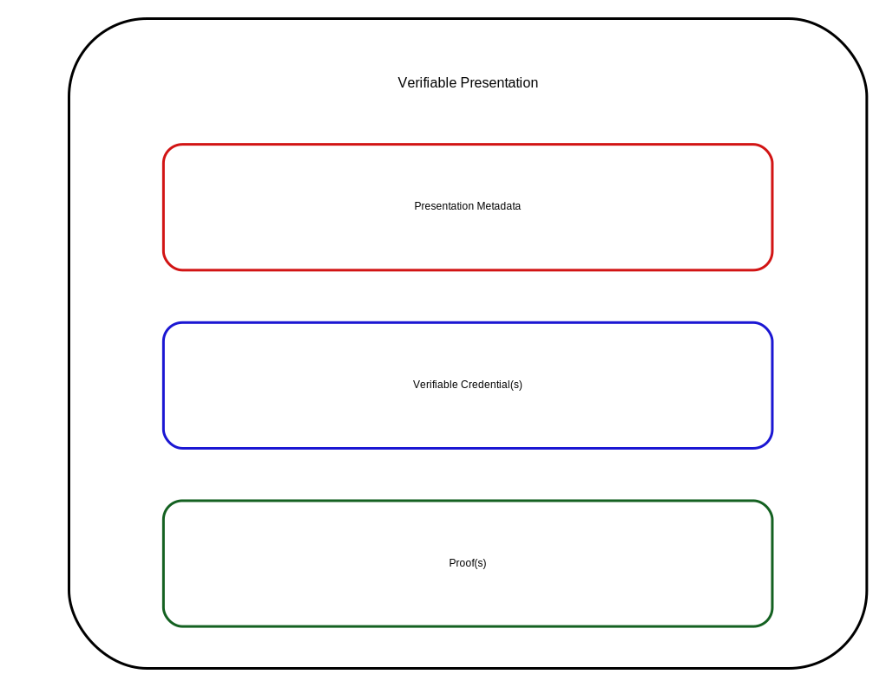

Credentials are integral to our daily lives: driver's licenses confirm
our capability to operate motor vehicles; university degrees assert our level
of education; and government-issued passports attest to our citizenship when
traveling between countries. This specification provides a mechanism for
expressing these sorts of credentials on the Web in a way that is
cryptographically secure, privacy respecting, and machine verifiable. These
credentials provide benefits to us when used in the physical world, but
their use on the Web continues to be elusive.
Status of This Document
This section describes the status of this
document at the time of its publication. A list of current W3C
publications and the latest revision of this technical report can be found
in the W3C technical reports index at
https://www.w3.org/TR/.
The Working Group is actively seeking implementation feedback for this
specification. In order to exit the Candidate Recommendation phase, the
Working Group has set the requirement of at least two independent
implementations for each mandatory feature in the specification. Please see
the
implementation report for more details.
(Feature at Risk) Issue: Features with less than two independent implementations
Any feature with less than two independent implementations in the
implementation report is an "at risk" feature and might be
removed before the transition to W3C Proposed Recommendation.
Publication as a Candidate Recommendation does not
imply endorsement by W3C and its Members. A Candidate Recommendation Snapshot has received
wide review, is intended to
gather
implementation experience,
and has commitments from Working Group members to
royalty-free licensing
for implementations.
This Candidate Recommendation is not expected to advance to Proposed
Recommendation any earlier than 05 December 2024.
This document was produced by a group
operating under the
W3C Patent
Policy.
W3C maintains a
public list of any patent disclosures
made in connection with the deliverables of
the group; that page also includes
instructions for disclosing a patent. An individual who has actual
knowledge of a patent which the individual believes contains
Essential Claim(s)
must disclose the information in accordance with
section 6 of the W3C Patent Policy.
Credentials are integral to our daily lives: driver's licenses confirm
our capability to operate motor vehicles; university degrees assert our level
of education; and government-issued passports attest to our citizenship when
traveling between countries. This specification provides a mechanism for
expressing these sorts of credentials on the Web in a way that is
cryptographically secure, privacy respecting, and machine verifiable. These
credentials provide benefits to us when used in the physical world, but
their use on the Web continues to be elusive.
It is currently difficult to express educational qualifications, healthcare
data, financial account details, and other third-party-verified
personal information in a machine readable way on the Web. The challenge of
expressing digital credentials on the Web hinders our ability to receive
the same benefits from them that physical credentials provide in the
real world.
For those unfamiliar with the concepts related to
verifiable credentials, the following sections provide an overview of:
In the physical world, a credential might consist of:
Information related to identifying the subject of the credential
(for example, a photo, name, or identification number)
Information related to the issuing authority (for example, a city government,
national agency, or certification body)
Information related to the type of credential (for example, a
Dutch passport, an American driving license, or a health insurance card)
Information related to specific properties asserted by
the issuing authority about the subject (for example, nationality,
date of birth, or the classes of vehicle they're qualified to drive)
Evidence by which a subject was demonstrated to have satisfied the
qualifications required for issuance of the credential (for example,
a measurement, proof of citizenship, or test result)
Information related to constraints on the credential (for example,
validity period, or terms of use).
A verifiable credential can represent all the same information that a
physical credential represents. Adding technologies such as
digital signatures can make verifiable credentials more tamper-evident and
trustworthy than their physical counterparts.
Both verifiable credentials and verifiable presentations can be
transmitted rapidly, making them more convenient than their physical
counterparts when establishing trust at a distance.
While this specification attempts to improve the ease of expressing digital
credentials, it also aims to balance this goal with several
privacy-preserving goals. The persistence of digital information, and the ease
with which disparate sources of digital data can be collected and correlated,
comprise a privacy concern that the use of verifiable and easily
machine-readable credentials threatens to make worse. This document
outlines and attempts to address several of these issues in Section
8. Privacy Considerations. Examples of how to use this data model
using privacy-enhancing technologies, such as zero-knowledge proofs, are also
provided throughout this document.
The word "verifiable" in the terms verifiable credential and
verifiable presentation refers to the characteristic of a credential
or presentation as being able to be verified by a verifier,
as defined in this document. Verifiability of a credential does not imply
the truth of claims encoded therein. Instead, upon establishing the
authenticity and currency of a verifiable credential or
verifiable presentation, a verifier validates the included claims using
their own business rules before relying on them. Such reliance only occurs after
evaluating the issuer, the proof, the subject, and the claims against one or
more verifier policies.
1.2 Ecosystem Overview
This section is non-normative.
This section describes the roles of the core actors and the relationships
between them in an ecosystem where one expects verifiable credentials
to be useful. A role is an abstraction that might be implemented in many
different ways. The separation of roles suggests likely interfaces and
protocols for standardization. This specification introduces the following
roles:
A role an entity can perform by asserting claims about one or more
subjects, creating a verifiable credential from these claims, and
transmitting the verifiable credential to a holder. For example, issuers
include corporations, non-profit organizations, trade associations, governments,
and individuals.
A role an entity performs by receiving one or more verifiable credentials, optionally inside a verifiable presentation for processing.
Example verifiers include employers, security personnel, and websites.
A role a system might perform by mediating the creation and verification of
identifiers, verification material, and other relevant data, such as
verifiable credential schemas, revocation registries, and so on, which might
require using verifiable credentials. Some configurations might require
correlatable identifiers for subjects. Some registries, such as ones for
UUIDs and verification material, might just act as namespaces for
identifiers. Examples of verifiable data registries include trusted databases,
decentralized databases, government ID databases, and distributed ledgers. Often,
more than one type of verifiable data registry used in an ecosystem.
Figure 1
The roles and information flows forming the basis for this
specification.
Note: Other types of ecosystems exist
Figure 1 above provides an example ecosystem to ground the
rest of the concepts in this specification. Other ecosystems exist, such as
protected environments or proprietary systems, where
verifiable credentials also provide benefits.
This ecosystem contrasts with the typical two-party or federated identity
provider models. An identity provider, sometimes abbreviated as IdP,
is a system for creating, maintaining, and managing identity information for
holders while providing authentication services to relying party
applications within a federation or distributed network. In a federated
identity model, the holder is tightly bound to the identity provider.
This specification avoids using "identity provider," "federated identity," or
"relying party" terminology, except when comparing or mapping these concepts
to other specifications. This specification decouples the identity provider
concept into two distinct concepts: the issuer and the holder.
As well as sections marked as non-normative, all authoring guidelines, diagrams, examples, and notes in this specification are non-normative. Everything else in this specification is normative.
The key words MAY, MUST, MUST NOT, OPTIONAL, RECOMMENDED, REQUIRED, SHOULD, and SHOULD NOT in this document
are to be interpreted as described in
BCP 14
[RFC2119] [RFC8174]
when, and only when, they appear in all capitals, as shown here.
A conforming document is a
compacted JSON-LD
document that complies with all of the relevant "MUST" statements in this
specification. Specifically, the relevant normative "MUST" statements in
Sections 4. Basic Concepts, 5. Advanced Concepts, and
6. Syntaxes of this document MUST be enforced.
A conforming document MUST be either a verifiable credential
with a media type of application/vc or a verifiable presentation
with a media type of application/vp. A conforming document MUST be
secured by at least one securing mechanism as described in Section
4.12 Securing Mechanisms.
This document also contains examples that contain characters that are invalid
JSON, such as inline comments (//) and the use of ellipsis
(...) to denote information that adds little value to the example.
Implementers are cautioned to remove this content if they desire to use the
information as a valid document.
Note: Human-readable texts in English are illustrative
Examples provided throughout this document include descriptive properties, such as
name and description, with values in English to simplify the concepts in each
example of the specification. These examples do not necessarily reflect the data
structures needed for international use, described in more detail in
Section 11. Internationalization Considerations.
2. Terminology
The following terms are used to describe concepts in this specification.
Anything that can be referenced in statements as an abstract or concrete noun.
Entities include but are not limited to people, organizations, physical things,
documents, abstract concepts, fictional characters, and arbitrary text. Any
entity might perform roles in the ecosystem, if it can do so. Note
that some entities fundamentally cannot take actions, for example, the string "abc"
cannot issue credentials.
graph
A set of claims, forming a network of information composed of subjects
and their relationship to other subjects or data. Each claim is
part of a graph; either explicit in the case of named graphs, or
implicit for the default graph.
A graph associated with specific properties, such as
verifiableCredential. These properties
result in separate graphs that contain all claims defined in the
corresponding JSON objects.
The assurance that a claim from a specific issuer satisfies the business
requirements of a verifier for a particular use. This specification defines
how verifiers verify verifiable credentials and verifiable presentations. It also specifies that verifiers validate claims in
verifiable credentials before relying on them. However, the means for such
validation vary widely and are outside the scope of this specification.
Verifiers trust certain issuers for certain claims and apply their own
rules to determine which claims in which credentials are suitable for use by
their systems.
verifiable credential
A tamper-evident credential whose authorship can be cryptographically
verified. Verifiable credentials can be used to build
verifiable presentations, which can also be cryptographically verifiable.
verifiable data registry
A role a system might perform by mediating the creation and verification
of identifiers, verification material, and other relevant data, such as
verifiable credential schemas, revocation registries,
and so on, which might require using verifiable credentials. Some
configurations might require correlatable identifiers for subjects. Some
registries, such as ones for UUIDs and verification material, might act
as namespaces for identifiers.
verifiable presentation
A tamper-evident presentation of information encoded in such a way that
authorship of the data can be trusted after a process of cryptographic
verification. Certain types of verifiable presentations might contain data that
is synthesized from, but does not contain, the original verifiable credentials
(for example, zero-knowledge proofs).
verification
The evaluation of whether a verifiable credential or verifiable presentation is an authentic and current statement of the issuer or presenter,
respectively. This includes checking that the credential or presentation
conforms to the specification, the securing mechanism is satisfied, and, if
present, the status check succeeds. Verification of a credential does not imply
evaluation of the truth of claims encoded in the credential.
Information that is used to verify the security of cryptographically
protected information. For example, a cryptographic public key is used to verify
a digital signature associated with a verifiable credential.
URL
A Uniform Resource Locator, as defined by the URL Standard. URLs can be
dereferenced to result in a resource, such as a document. The rules
for dereferencing, or fetching, a URL are defined by the URL scheme.
This specification does not use the term URI or IRI because those terms have
been deemed to be confusing to Web developers.
A claim is a statement about a subject. A subject is a
thing about which claims can be made. Claims are expressed using
subject-
property-value relationships.
The data model for claims, illustrated in Figure 2
above, is powerful and can be used to express a large variety of statements. For
example, whether someone graduated from a particular university can be expressed
as shown in Figure 3 below.
Figure 3
A basic claim expressing that Pat is an alum of "Example University".
Individual claims can be merged together to express a graph of
information about a subject. The example shown in
Figure 4 below extends the previous claim by
adding the claims that Pat knows Sam and that Sam is employed as a
professor.
Figure 4
Multiple claims can be combined to express a graph of information.
To this point, the concepts of a claim and a graph of information
are introduced. More information is expected to be added to the graph in order
to be able to trust claims, more information is
expected to be added to the graph.
3.2 Credentials
This section is non-normative.
A credential is a set of one or more claims made by the same entity.
Credentials might also include an identifier and metadata to describe
properties of the credential, such as the issuer, the validity date and
time period, a representative image, verification material, status
information, and so on. A
verifiable credential is a set of tamper-evident claims and metadata
that cryptographically prove who issued it. Examples of verifiable credentials include, but are not limited to, digital employee identification
cards, digital driver's licenses, and digital educational certificates.
Figure 5
Basic components of a verifiable credential.
Enhancing privacy is a key design feature of this specification. Therefore, it
is crucial for entities using this technology to express only
the portions of their personas that are appropriate for given situations. The
expression of a subset of one's persona is called a verifiable presentation.
Examples of different personas include a person's professional persona,
online gaming persona, family persona, or incognito persona.
The data in a presentation is often about the same subject but might
have been issued by multiple issuers. The aggregation of this information
expresses an aspect of a person, organization, or entity.

Figure 8
Basic components of a verifiable presentation.
Note: Presentations can be presented by issuers and verifiers
As described in Section 1.2 Ecosystem Overview, an entity can take
on one or more roles as they enter a particular credential exchange.
While a holder is typically expected to generate presentations, an
issuer or verifier might generate a presentation to identify itself
to a holder. This might occur if the holder needs higher assurance
from the issuer or verifier before handing over sensitive information
as part of a verifiable presentation.
4. Basic Concepts
This section introduces some basic concepts for the specification in
preparation for Section 5. Advanced Concepts later in the
document.
4.1 Getting Started
This section is non-normative.
This specification is designed to ease the prototyping of new types of
verifiable credentials. Developers can copy the template below and paste it
into common verifiable credential tooling to start issuing, holding, and
verifying prototype credentials.
A developer will change MyPrototypeCredential below to the type of credential
they would like to create. Since verifiable credentials talk about subjects,
each property-value pair in the credentialSubject object expresses a
particular property of the credential subject. Once a developer has added a
number of these property-value combinations, the modified object can be sent to
a conforming issuer implementation, and a verifiable credential will be
created for the developer. From a prototyping standpoint, that is all a
developer needs to do.
Example 1: A template for creating prototype verifiable credentials
After stabilizing all credential properties, developers are advised to generate
and publish vocabulary and context files at stable URLs to facilitate
interoperability with other developers. The
https://www.w3.org/ns/credentials/examples/v2 URL above
would then be replaced with the URL of a use-case-specific context. This
process is covered in Section 5.2 Extensibility. Alternatively,
developers can reuse existing vocabulary and context files that happen to fit
their use case. They can explore the Verifiable Credential Extensions
for reusable resources.
When two software systems need to exchange data, they need to use terminology
that both systems understand. Consider how two people communicate effectively
by using the same language, where the words they use, such as "name" and
"website," mean the same thing to each individual. This is sometimes referred
to as the context of a conversation. This specification uses a similar
concept to achieve similar results for software systems by establishing a
context in which to communicate.
Software systems that process verifiable credentials and verifiable presentations identify terminology by using URLs for each term. However,
those URLs can be long and not very human-friendly, while short-form,
human-friendly aliases can be more helpful. This specification uses the
@contextproperty to map short-form aliases to the URLs.
Verifiable credentials and verifiable presentationsMUST include a
@contextproperty. Application developers MUST understand every JSON-LD
context used by their application, at least to the extent that it affects the
meaning of the terms used by their application. One mechanism for
doing so is described in the Section on
Validating Contexts in
the Verifiable Credential Data Integrity 1.0 specification. Other specifications that build
upon this specification MAY require that JSON-LD contexts be integrity protected
by using the relatedResource feature described in Section
5.3 Integrity of Related Resources or any effectively equivalent mechanism.
@context
The value of the @contextpropertyMUST be an ordered set
where the first item is a URL with the value
https://www.w3.org/ns/credentials/v2.
Subsequent items in the ordered setMUST be composed of any combination of
URLs and objects, where each is processable as a
JSON-LD Context.
The example above uses the base context URL
(https://www.w3.org/ns/credentials/v2) to establish that the data exchange is
about a verifiable credential. This concept is further detailed in
Section 5.2 Extensibility. The data available at
https://www.w3.org/ns/credentials/v2 is a permanently cacheable static
document with instructions for processing it provided in Appendix
B.1 Base Context. The associated human-readable vocabulary document for the
Verifiable Credentials Data Model is available at
https://www.w3.org/2018/credentials/.
The second URL (https://www.w3.org/ns/credentials/examples/v2) is used to
demonstrate examples. Implementations are expected to not use
this URL for any other purpose, such as in pilot or production systems.
Note: See JSON-LD for more information about @context.
When expressing statements about a specific thing, such as a person, product, or
organization, using a globally unique identifier for that thing can be useful.
Globally unique identifiers enable others to express statements
about the same thing. This specification defines the optional idproperty for such identifiers. The idproperty
allows for expressing statements about specific things in the
verifiable credential and is set by an issuer when expressing
objects in a verifiable credential or a holder when expressing
objects in a verifiable presentation. The idproperty expresses an
identifier that others are expected to use when expressing statements about the
specific thing identified by that identifier. Example id values
include UUIDs (urn:uuid:0c07c1ce-57cb-41af-bef2-1b932b986873), HTTP URLs
(https://id.example/things#123), and DIDs (did:example:1234abcd).
Note: Identifiers of any kind increase correlatability
Developers are reminded that identifiers might be harmful
when pseudonymity is required. When considering such scenarios, developers are
encouraged to read Section 8.4 Identifier-Based Correlation carefully
There are also other types of access and correlation mechanisms documented
in Section 8. Privacy Considerations that create privacy concerns.
Where privacy is a vital consideration, it is permissible to omit the
idproperty. Some use cases do not need or explicitly need to omit,
the idproperty. Similarly, special attention is to be given to the choice
between publicly resolvable URLs and other forms of identifiers. Publicly
resolvable URLs can facilitate ease of verification and interoperability, yet
they might also inadvertently grant access to potentially sensitive information
if not used judiciously.
id
The idproperty is OPTIONAL. If present, idproperty's value
MUST be a single URL, which MAY be dereferenceable. It is
RECOMMENDED that the URL in the id be one which, if dereferenceable, results
in a document containing machine-readable information about the id.
Software systems that process the kinds of objects specified in this document
use type information to determine whether or not a provided
verifiable credential or verifiable presentation is appropriate
for the intended use-case. This specification defines a typeproperty for expressing object type information. This type
information can be used during validation processes, as described in Appendix
A. Validation.
A valid credentialSchema type. For example, "type": "JsonSchema"
Note: The Verifiable Credentials Data Model is based on JSON-LD
The type system for the Verifiable Credentials Data Model is the same as
for JSON-LD 1.1 and is detailed in
Section 3.5:
Specifying the Type and
Section 9: JSON-LD
Grammar. When using a JSON-LD context (see Section
5.2 Extensibility), this specification aliases the
@type keyword to type to make the JSON-LD documents
more easily understood. While application developers and document authors do
not need to understand the specifics of the JSON-LD type system, implementers
of this specification who want to support interoperable extensibility do.
All credentials, presentations, and encapsulated objects SHOULD
specify, or be associated with, additional, more narrow types (like
ExampleDegreeCredential, for example) so software systems can
more easily detect and process this additional information.
When processing encapsulated objects defined in this specification, such as
objects associated with the credentialSubject object or deeply nested therein,
software systems SHOULD use the type information specified in encapsulating
objects higher in the hierarchy. Specifically, an encapsulating object, such as
a credential, SHOULD convey the associated object types so that
verifiers can quickly determine the contents of an associated object based
on the encapsulating object type.
For example, a credential object with the type of
ExampleDegreeCredential, signals to a verifier that the
object associated with the credentialSubject property contains the
identifier for the:
This enables implementers to rely on values associated with the type property
for verification. Object types and their associated values are
expected to be documented in at least a human-readable specification that can
be found at the URL for the type. For example, the human-readable
definition for the BitstringStatusList type can be found at
https://www.w3.org/ns/credentials/status/#BitstringStatusList. It is also
suggested that a
machine-readable version be provided through HTTP content negotiation at
the same URL.
Note: See the Implementation Guide for creating new credential types
When displaying a credential, it can be helpful to have
text provided by the issuer that furnishes the
credential with a name and a short description of its
purpose. The name and descriptionproperties
serve these purposes.
name
An OPTIONAL property that expresses the name of the credential. If
present, the value of the namepropertyMUST be a string or
a language value object as described in
11.1 Language and Base Direction. Ideally, the name of a
credential is concise, human-readable, and could enable an individual to
quickly differentiate one credential from any other credentials
they might hold.
description
An OPTIONAL property that conveys specific details about a credential. If
present, the value of the descriptionpropertyMUST be a
string or a language value object as described in
11.1 Language and Base Direction. Ideally, the description of a
credential is no more than a few sentences in length and conveys enough
information about the credential to remind an individual of its contents
without having to look through the entirety of the claims.
Example 5: Use of the name and description properties
{
"@context": [
"https://www.w3.org/ns/credentials/v2",
"https://www.w3.org/ns/credentials/examples/v2"
],
"id": "http://university.example/credentials/3732",
"type": ["VerifiableCredential", "ExampleDegreeCredential"],
"issuer": {
"id": "https://university.example/issuers/565049",
"name": "Example University",
"description": "A public university focusing on teaching examples."
},
"validFrom": "2015-05-10T12:30:00Z",
"name": "Example University Degree",
"description": "2015 Bachelor of Science and Arts Degree",
"credentialSubject": {
"id": "did:example:ebfeb1f712ebc6f1c276e12ec21",
"degree": {
"type": "ExampleBachelorDegree",
"name": "Bachelor of Science and Arts"
}
}
}
application/vc
{
"@context": [
"https://www.w3.org/ns/credentials/v2",
"https://www.w3.org/ns/credentials/examples/v2"
],
"id": "http://university.example/credentials/3732",
"type": [
"VerifiableCredential",
"ExampleDegreeCredential"
],
"issuer": {
"id": "https://university.example/issuers/565049",
"name": "Example University",
"description": "A public university focusing on teaching examples."
},
"validFrom": "2015-05-10T12:30:00Z",
"name": "Example University Degree",
"description": "2015 Bachelor of Science and Arts Degree",
"credentialSubject": {
"id": "did:example:ebfeb1f712ebc6f1c276e12ec21",
"degree": {
"type": "ExampleBachelorDegree",
"name": "Bachelor of Science and Arts"
}
},
"proof": {
"type": "DataIntegrityProof",
"created": "2024-10-19T15:11:57Z",
"verificationMethod": "did:key:zDnaefvdHCiucbyp1JJeeiqQEMU9j3ZLsYLGATUa
coUSTCqMa",
"cryptosuite": "ecdsa-rdfc-2019",
"proofPurpose": "assertionMethod",
"proofValue": "z4MeKa2JgH1PRKZ72yxk6DBicD4n1Hsxdf59JByt3aRGr4mjkbAUPZ7Q
FE6tL5fXGvjWRvA3YDGKkjgudLsgtUoPX"
}
}
application/vc
{
"@context": [
"https://www.w3.org/ns/credentials/v2",
"https://www.w3.org/ns/credentials/examples/v2"
],
"id": "http://university.example/credentials/3732",
"type": [
"VerifiableCredential",
"ExampleDegreeCredential"
],
"issuer": {
"id": "https://university.example/issuers/565049",
"name": "Example University",
"description": "A public university focusing on teaching examples."
},
"validFrom": "2015-05-10T12:30:00Z",
"name": "Example University Degree",
"description": "2015 Bachelor of Science and Arts Degree",
"credentialSubject": {
"id": "did:example:ebfeb1f712ebc6f1c276e12ec21",
"degree": {
"type": "ExampleBachelorDegree",
"name": "Bachelor of Science and Arts"
}
},
"proof": {
"type": "DataIntegrityProof",
"created": "2024-10-19T15:11:57Z",
"verificationMethod": "did:key:z6MkoMNw91tHHBKpvxDvr3s9AjPLb8b9i1EEvmhX
jauHfUFP",
"cryptosuite": "eddsa-rdfc-2022",
"proofPurpose": "assertionMethod",
"proofValue": "z3H2HnhoUxStPkGdSTg8ENNJqi3wyBgYheK6wcUXt86NEe6mRZW8X6Mx
bpfRDimSoW8UCHWtqaTB21YufQ1NAYuWS"
}
}
application/vc
{
"@context": [
"https://www.w3.org/ns/credentials/v2",
"https://www.w3.org/ns/credentials/examples/v2"
],
"id": "http://university.example/credentials/3732",
"type": [
"VerifiableCredential",
"ExampleDegreeCredential"
],
"issuer": {
"id": "https://university.example/issuers/565049",
"name": "Example University",
"description": "A public university focusing on teaching examples."
},
"validFrom": "2015-05-10T12:30:00Z",
"name": "Example University Degree",
"description": "2015 Bachelor of Science and Arts Degree",
"credentialSubject": {
"id": "did:example:ebfeb1f712ebc6f1c276e12ec21",
"degree": {
"type": "ExampleBachelorDegree",
"name": "Bachelor of Science and Arts"
}
},
"proof": {
"type": "DataIntegrityProof",
"created": "2024-10-19T15:11:57Z",
"verificationMethod": "did:key:zDnaeXnciGHgPjXF8TiQ2zJfFAwdRW1HgmCp28eo
m5MLkXHY1",
"cryptosuite": "ecdsa-sd-2023",
"proofPurpose": "assertionMethod",
"proofValue": "u2V0AhVhARPifObFNor3w91s75mBYk7xzceH5VcsmOz3jgHdBmOsUtqe
1U683N6dEge400syUazKDNSlFo1xhYY9i9BkQClgjgCQC-gWg3erB3e54SYPgU3SJORQ3dsr6d7
A0aUPDxdc9H7xYIFdYUz7ns6IgI2MXbg79VhW3GuemHoJl8dXsiBhOmflUh1hAjwKC5p8LWlxeW
M9I9iTv4RZZzGx2bRN0sHYSpZcoQOQ2Oiwy4SvsAsW5aA4CV2ChDXdR7TQGhBjv5CwuJl6C8FhA
Qu8ZT43eYIga0zsPryAkbIrkP3go8wC5Q6EegUqyQFePIKC4PWmGluFE4hrK5OBKAomDgjEy5Io
6qz1T8BcKBVhA8SHfD_ExGYWtqCIRXMpDG3Ex_Be13NIuTRhsmylpxM_mkyg76XfiWfXuZ9XImV
g_J4cVozzSlYyJ2LmlUxvyNVhApnVCgOjCkpXlknrXdRtW3_p4xgmgKYKAwV0eBCxPWTA9OW7Oh
L25e4Youmk6c3PLvsBVbXNOciYXgkK8cXdg3VhAMFYBo2gOFaJ2L0DV3ZDtKm-xWPaCtgZysLV6
uYzfi7Vd9HEa98UTar6dtPPlaLZ6jZ63MI8oV16oOLPkjKPHaVhAiO_SbdfL8KHN06HbPI-R42J
F1Cc4O0R6Vv7wPuQPVzpqKNAb23pxwCihbNpYAHf3gmgJDNCk39WAxywhWG-HelhAKykXtEg5CR
bQqHqB4UZ1IGmpvnnUY-4MXRWrgmaJk0JC3lEiuQ7kGc06MjbGRgTiEPcpV-tKyqRrH-if1KMC_
IFnL2lzc3Vlcg"
}
}
application/vc
{
"@context": [
"https://www.w3.org/ns/credentials/v2",
"https://www.w3.org/ns/credentials/examples/v2"
],
"id": "http://university.example/credentials/3732",
"type": [
"VerifiableCredential",
"ExampleDegreeCredential"
],
"issuer": {
"id": "https://university.example/issuers/565049",
"name": "Example University",
"description": "A public university focusing on teaching examples."
},
"validFrom": "2015-05-10T12:30:00Z",
"name": "Example University Degree",
"description": "2015 Bachelor of Science and Arts Degree",
"credentialSubject": {
"id": "did:example:ebfeb1f712ebc6f1c276e12ec21",
"degree": {
"type": "ExampleBachelorDegree",
"name": "Bachelor of Science and Arts"
}
},
"proof": {
"type": "DataIntegrityProof",
"verificationMethod": "did:key:zUC7EbeSMfQ5qE5eVm65RwdAHEmqgxNdKWQDAec5
dtUUzAFhh9YAu8GdY39fLM5W9V8XQmNTzBqb2cA953XmaGSqrygooRGbDxRMQUacKaX55eSmv8B
B5dm1qh5Lw7mUfTmV8NZ",
"cryptosuite": "bbs-2023",
"proofPurpose": "assertionMethod",
"proofValue": "u2V0ChVhQhS1VZippq7O6oQSz-ice0v25BiMlCbGyHso-aKbIFCfwGIT
KeZB7zUiaCTBJTn1LNzFatehla1GGrJXDdj7yN2NkZX04xBWzTMdH715pVNhYQM0vqac8Adv6SA
DwA-bgCAAe4jbNA0EqZt6RtqWCSkTVXFDE8ZX70eeJX1DawHuw0sW9CBV3sa68IaRGcnZiiQpYY
KetIkB9UPWfPh8igbCp7Op_zMTFO7k0ZiG00Q-d3O2HxNGCYp4qN7k5e5mkwf5PqAE3n5uIzDO_
CCYK080fKRXqhx2RVwV3VvlCwwUONpSWpfgXEEPsh3_G9kch_VjvPlggCEY6T30ZXfp_dYY82nd
8yK5aOv1J5qBVpg5fRu9K4SSBZy9pc3N1ZXI"
}
}
Names and descriptions also support expressing content in different languages.
To express a string with language and base direction information,
one can use an object that contains the @value, @language, and @direction
properties to express the text value, language tag, and base direction,
respectively. See
11.1 Language and Base Direction for further information.
Note: @direction is not required for single-language strings
The @direction property in the examples below is not required
for the associated single-language strings, as their default directions are the
same as those set by the @direction value. We include the @direction
property here for clarity of demonstration and to make copy+paste+edit deliver
functional results. Implementers are encouraged to read the section on
String Internationalization
in the JSON-LD 1.1 specification.
Example 6: Use of the name and description properties
{
"@context": [
"https://www.w3.org/ns/credentials/v2",
"https://www.w3.org/ns/credentials/examples/v2"
],
"id": "http://university.example/credentials/3732",
"type": ["VerifiableCredential", "ExampleDegreeCredential"],
"issuer": {
"id": "https://university.example/issuers/565049",
"name": [{
"@value": "Example University",
"@language": "en"
}, {
"@value": "Université Exemple",
"@language": "fr"
}, {
"@value": "جامعة المثال",
"@language": "ar",
"@direction": "rtl"
}],
"description": [{
"@value": "A public university focusing on teaching examples.",
"@language": "en"
}, {
"@value": "Une université publique axée sur l'enseignement d'exemples.",
"@language": "fr"
}, {
"@value": ".جامعة عامة تركز على أمثلة التدريس",
"@language": "ar",
"@direction": "rtl"
}]
},
"validFrom": "2015-05-10T12:30:00Z",
"name": [{
"@value": "Example University Degree",
"@language": "en"
}, {
"@value": "Exemple de Diplôme Universitaire",
"@language": "fr"
}, {
"@value": "مثال الشهادة الجامعية",
"@language": "ar",
"@direction": "rtl"
}],
"description": [{
"@value": "2015 Bachelor of Science and Arts Degree",
"@language": "en"
}, {
"@value": "2015 Licence de Sciences et d'Arts",
"@language": "fr"
}, {
"@value": "2015 بكالوريوس العلوم والآداب",
"@language": "ar",
"@direction": "rtl"
}],
"credentialSubject": {
"id": "did:example:ebfeb1f712ebc6f1c276e12ec21",
"degree": {
"type": "ExampleBachelorDegree",
"name": [{
"@value": "Bachelor of Science and Arts Degree",
"@language": "en"
}, {
"@value": "Licence de Sciences et d'Arts",
"@language": "fr"
}, {
"@value": "بكالوريوس العلوم والآداب",
"@language": "ar",
"@direction": "rtl"
}]
}
}
}
The value of the issuerpropertyMUST be either a
URL or an object containing an idproperty
whose value is a URL; in either case, the issuer selects this
URL to identify itself in a globally unambiguous
way. It is RECOMMENDED that the URL be one which, if dereferenced, results
in a controller document, as defined in [CONTROLLER-DOCUMENT], about the
issuer that can be used to verify the information expressed in the
credential.
The value of the issuerproperty can also be a JWK (for
example, "https://jwk.example/keys/foo.jwk") or a DID (for
example, "did:example:abfe13f712120431c276e12ecab").
The value of the credentialSubjectproperty is a set of objects where each
object MUST be the subject of one or more claims, which MUST be
serialized inside the credentialSubjectproperty. Each object MAY also
contain an idproperty to identify the subject, as described in
Section 4.4 Identifiers.
Expressing information related to multiple subjects in a
verifiable credential is possible. The example below specifies two
subjects who are spouses. Note the use of array notation to associate
multiple subjects with the credentialSubject property.
Example 10: Specifying multiple subjects in a verifiable credential
This specification defines the validFromproperty to help an
issuer to express the date and time when a credential becomes valid and
the validUntilproperty to express the date and time
when a credential ceases to be valid.
When comparing dates and times, the calculation is done "temporally",
meaning that the string value is converted to a "temporal value" which exists
as a point on a timeline. Temporal comparisons are then performed by checking
to see where the date and time being compared are in relation to
a particular point on the timeline.
validFrom
If present, the value of the validFrompropertyMUST be a
[XMLSCHEMA11-2]
dateTimeStamp string value representing the date and time the
credential becomes valid, which could be a date and time in the future or
the past. Note that this value represents the earliest point in time at which
the information associated with the credentialSubjectproperty becomes valid. If a validUntil value also exists, the
validFrom value MUST express a point in time that is temporally the same or
earlier than the point in time expressed by the validUntil value.
validUntil
If present, the value of the validUntilpropertyMUST be a
[XMLSCHEMA11-2]
dateTimeStamp string value representing the date and time the
credential ceases to be valid, which could be a date and time in the past
or the future. Note that this value represents the latest point in time at
which the information associated with the credentialSubjectproperty is valid. If a validFrom value also exists, the validUntil
value MUST express a point in time that is temporally the same or later than the
point in time expressed by the validFrom value.
Example 11: Use of the validFrom and validUntil properties
Note: Validity start period for Verifiable Credentials
If validFrom and validUntil are not present, the
verifiable credential validity period is considered valid
indefinitely. In such cases, the verifiable credential is assumed to be
valid from the time the verifiable credential was created.
4.10 Status
This specification defines the
credentialStatusproperty for
discovering information related to the status of a verifiable credential, such as whether it is suspended or revoked.
If present, the value associated with the credentialStatusproperty is a
single object or a set of one or more objects. The following properties
are defined for every object:
id
The idproperty is OPTIONAL. It MAY be used to provide a
unique identifier for the credential status object. If present, the
normative guidance in Section 4.4 IdentifiersMUST be followed.
type
The typeproperty is REQUIRED. It is used to express the
type of status information expressed by the object. The related normative
guidance in Section 4.5 TypesMUST be followed.
The precise content of the credential status information is determined by
the specific credentialStatustype definition and varies
depending on factors such as whether it is simple to implement or if it is
privacy-enhancing. The value will provide enough information to determine the
current status of the credential and whether machine-readable information will
be retrievable from the URL. For example, the object could contain a link to an
external document that notes whether the credential is suspended or revoked.
Implementers are cautioned that credentials with multiple status entries
might contain conflicting information. Reconciling such conflicts is a part of
the validation process, hence part of the verifier's business logic, and
therefore out of scope for this specification.
Defining the data model, formats, and protocols for status schemes is out of the
scope of this specification. The Verifiable Credential Extensions document contains
available status schemes for implementers who want to implement verifiable credential status checking.
Credential status specifications MUST NOT enable tracking of individuals, such
as an issuer being notified (either directly or indirectly) when a
verifier is interested in a specific holder or subject. Unacceptable
approaches include "phoning home," such that every use of a credential contacts
the issuer of the credential to check the status for a specific individual,
or "pseudonymity reduction," such that every use of the credential causes a
request for information from the issuer that the issuer can use
to deduce verifier interest in a specific individual.
4.11 Data Schemas
Data schemas are useful when enforcing a specific structure on a given
data collection. There are at least two types of data schemas that this
specification considers:
Data verification schemas, which are used to establish that the structure
and contents of a credential or verifiable credential conform to a
published schema.
Data encoding schemas, which are used to map the contents of a
verifiable credential to an alternative representation format, such as a
format used in a zero-knowledge proof.
It is important to understand that data schemas serve a different purpose from
the @context property, which neither enforces data structure or
data syntax nor enables the definition of arbitrary encodings to alternate
representation formats.
This specification defines the following property for expressing a
data schema, which an issuer can include in the verifiable credentials
that it issues:
credentialSchema
The value of the credentialSchemapropertyMUST be one or
more data schemas that provide verifiers with enough information to
determine whether the provided data conforms to the provided schema(s). Each
credentialSchemaMUST specify its type (for example,
JsonSchema) and an idproperty
that MUST be a URL identifying the schema file. The specific type
definition determines the precise contents of each data schema.
If multiple schemas are present, validity is determined according to the
processing rules outlined by each associated type property.
Note: Credential type-specific syntax checking is possible
The credentialSchemaproperty allows one to
annotate type definitions or lock them to specific versions of the vocabulary.
Authors of verifiable credentials can include a static version of their
vocabulary using credentialSchema that is secured by some content
integrity protection mechanism. The credentialSchemaproperty also makes it possible to perform syntactic checking on the
credential and to use verification mechanisms such as JSON Schema
[VC-JSON-SCHEMA] validation.
Example 14: Using the credentialSchema property to perform JSON schema validation
In the example above, the issuer is specifying two credentialSchema
objects, each of which point to a JSON Schema [VC-JSON-SCHEMA] file that a
verifier can use to determine whether the verifiable credential is
well-formed.
4.12 Securing Mechanisms
This specification recognizes two classes of
securing mechanisms:
those that use enveloping proofs and those that use embedded proofs.
These two classes of securing mechanisms are not mutually exclusive. Additional
securing mechanism specifications might also be defined according to the rules
in Section 5.13 Securing Mechanism Specifications.
Example 15: A verifiable credential using an embedded proof
The embedded proof above secures the original credential by decorating
the original data with a digital signature via the proof property. This
results in a verifiable credential that is easy to manage in modern
programming environments and database systems.
Example 16: A verifiable credential that uses an enveloping proof in SD-JWT format
The enveloping proof above secures the original credential by
encapsulating the original data in a digital signature envelope, resulting in a
verifiable credential that can be processed using tooling that understands
the SD-JWT format.
Verifiable presentationsSHOULD be extremely short-lived and bound to a
challenge provided by a verifier. Details for accomplishing this depend
on the securing mechanism, the transport protocol, and verifier policies.
Unless additional requirements are defined by the particular securing mechanism
or embedding protocol, a verifier cannot generally assume that the
verifiable presentation correlates with the presented
verifiable credentials.
The idproperty is optional. It MAY be used to provide a
unique identifier for the verifiable presentation. If present, the
normative guidance in Section 4.4 IdentifiersMUST be followed.
type
The typepropertyMUST be present. It is used to express the
type of verifiable presentation. One value of this property MUST be
VerifiablePresentation, but additional types MAY be included. The
related normative guidance in Section 4.5 TypesMUST be followed.
The verifiable presentationMAY include a holderproperty. If present, the value MUST be either a URL or an object
containing an idproperty. It is RECOMMENDED that the
URL in the holder or its id be one which, if
dereferenced, results in a document containing machine-readable information
about the holder that can be used to verify the information
expressed in the verifiable presentation.
If the holderproperty is absent, information about the
holder is obtained either via the securing mechanism or
does not pertain to the validation of the verifiable presentation.
It is possible that an implementer might want to process the object described in
this section and the enveloped presentation expressed by the id value in an
RDF environment and create linkages between the objects that are relevant to
RDF. The desire and mechanisms for doing so are use case dependent and will,
thus, be implementation dependent.
Some zero-knowledge cryptography schemes might enable holders to
indirectly prove they hold claims from a verifiable credential
without revealing all claims in that verifiable credential. In these
schemes, a verifiable credential might be used to derive presentable
data, which is cryptographically asserted such that a verifier can trust
the value if they trust the issuer.
Example 21: A verifiable presentation, secured with an embedded Data Integrity proof, with a self-asserted verifiable credential about the verifiable presentation
{
"@context": [
"https://www.w3.org/ns/credentials/v2",
"https://www.w3.org/ns/credentials/examples/v2"
],
"type": ["VerifiablePresentation", "ExamplePresentation"],
"id": "urn:uuid:313801ba-24b7-11ee-be02-ff560265cf9b",
"holder": "did:example:12345678",
"verifiableCredential": [{
"@context": [
"https://www.w3.org/ns/credentials/v2",
"https://www.w3.org/ns/credentials/examples/v2"
],
"type": ["VerifiableCredential", "ExampleAssertCredential"],
"issuer": "did:example:12345678",
"credentialSubject": {
"id": "urn:uuid:313801ba-24b7-11ee-be02-ff560265cf9b",
"assertion": "This VP is submitted by the subject as evidence of a legal right to drive"
},
"proof": { ... }
}],
"proof": { ... }
}
A credential is transmitted in a way that clearly establishes that the
issuer generated the credential, and that the credential was not
tampered with in transit nor storage. This expectation could be weakened,
depending on the risk assessment by the verifier.
All entities expect the verifiable data registry to be tamper-evident
and to be a correct record of which data is controlled by which entities.
This is typically achieved by the method of its publication. This could be via a
peer-to-peer protocol from a trusted publisher, a publicly accessible and well
known web site (with a content hash), a blockchain, etc. When entities publish
metadata about themselves, the publication can be integrity-protected by being
secured using with the entity's private key.
The holder might trust the issuer'sclaims because the holder
has a pre-existing trust relationship with the issuer. For example, an
employer might provide an employee with an employment verifiable credential,
or a government might issue an electronic passport to a citizen.
Where no pre-existing trust relationship exists, the holder might
have some out-of-band means of determining whether the issuer is
qualified to issue the verifiable credential being provided.
Note: It is not always necessary for the holder to trust the issuer,
since the issued verifiable credential might be an assertion about
a subject who is not the holder, or about no-one, and the holder
might be willing to relay this information to a verifier without
being held accountable for its veracity.
By decoupling the expectations between the issuer and the verifier,
a more flexible and dynamic trust model is created, such that market
competition and customer choice is increased.
Note: Trust model differs from the traditional Certificate Authority system
The data model detailed in this specification does not imply a transitive trust
model, such as that provided by more traditional Certificate Authority trust
models. In the Verifiable Credentials Data Model, a verifier either
directly trusts or does not trust an issuer. While it is possible to
build transitive trust models using the Verifiable Credentials Data Model,
implementers are urged to
learn
about the security weaknesses introduced by
broadly delegating trust in the manner adopted by Certificate Authority
systems.
5.2 Extensibility
One of the goals of the Verifiable Credentials Data Model is to enable
permissionless innovation. To achieve this, the data model needs to be
extensible in a number of different ways. The data model is required to:
Model complex multi-entity relationships through the use of a graph-based
data model.
Extend the machine-readable vocabularies used to describe information in the
data model, without the use of a centralized system for doing so, through the
use of Linked Data [LINKED-DATA].
Provide all of the extensibility mechanisms outlined above in a data format that
is popular with software developers and web page authors, and is enabled through
the use of JSON-LD 1.1.
This approach to data modeling is often called an
open world assumption, meaning that any entity can say anything about
any other entity. While this approach seems to conflict with building simple and
predictable software systems, balancing extensibility with program correctness
is always more challenging with an open world assumption than with closed
software systems.
The rest of this section describes, through a series of examples, how both
extensibility and program correctness are achieved.
Let us assume we start with the credential shown below.
This verifiable credential states that the entity associated with
did:example:abcdef1234567 has a name with a value of
Jane Doe.
Now let us assume a developer wants to extend the verifiable credential
to store two additional pieces of information: an internal corporate reference
number, and Jane's favorite food.
The first thing to do is to create a JSON-LD context containing two new terms,
as shown below.
After this JSON-LD context is created, the developer publishes it somewhere so
it is accessible to verifiers who will be processing the
verifiable credential. Assuming the above JSON-LD context is published at
https://extension.example/my-contexts/v1, we can extend this
example by including the context and adding the new properties and
credentialtype to the verifiable credential.
Example 24: A verifiable credential with a custom extension
This example demonstrates extending the Verifiable Credentials Data Model in a
permissionless and decentralized way. The mechanism shown also ensures that
verifiable credentials created in this way provide a way to prevent
namespace conflicts and semantic ambiguity.
A dynamic extensibility model such as this does increase the implementation
burden. Software written for such a system has to determine whether
verifiable credentials with extensions are acceptable based on the risk
profile of the application. Some applications might accept only certain
extensions while highly secure environments might not accept any extensions.
These decisions are up to the developers of these applications and are
specifically not the domain of this specification.
Extension specification authors are urged to ensure that their documents, such
as JSON-LD Contexts, are highly available. Developers using these documents
might use software that produces errors when these documents cannot be
retrieved. Strategies for ensuring that extension JSON-LD contexts are always
available include bundling these documents with implementations, content
distribution networks with long caching timeframes, or using
content-addressed URLs for contexts. These approaches are covered in further
detail in Appendix
B. Contexts, Vocabularies, Types, and Credential Schemas.
Whenever possible, it is RECOMMENDED to re-use terms — and their corresponding
URLs — defined by well-known, public vocabularies, such as Schema.org.
New terms MUSTdefine a new URL for each term. When doing so, the
general guidelines for [LINKED-DATA] are expected to be followed, in
particular:
Human-readable documentation MUST be published, describing the semantics of and
the constraints on the use of each term.
It is RECOMMENDED to also publish the collection of all new terms as a
machine-readable vocabulary using RDF Schema 1.1.
It SHOULD be possible to dereference the URL of a term, resulting in its
description and/or formal definition.
Furthermore, a machine-readable description (that is, a
JSON-LD Context document) MUST be
published at the URL specified in the @contextproperty for the
vocabulary. This context MUST map each term to its corresponding URL, possibly
accompanied by further constraints like the type of the property value. A
human-readable document describing the expected order of values for the
@contextproperty is also expected to be published by any implementer
seeking interoperability.
Note: Term redefinition is not allowed
When processing the active
context defined by the base JSON-LD Context document defined in this specification, compliant JSON-LD-based
processors produce an error when a JSON-LD context redefines any term.
The only way to change the definition of existing terms is to introduce a new
term that clears the active context within the scope of that new term. Authors
that are interested in this feature should read about the
@protected
keyword in the JSON-LD 1.1 specification.
A conforming documentSHOULD NOT use the
@vocab feature in production
as it can lead to JSON term clashes, resulting in semantic ambiguities with
other applications. Instead, to achieve proper interoperability, a conforming documentSHOULD use JSON-LD Contexts that define all terms used by their
applications, as described earlier in Section 5.2 Extensibility. If a
conforming document does not use JSON-LD Contexts that define all terms
used, it MUST include the https://www.w3.org/ns/credentials/undefined-terms/v2
as the last value in the @context property.
5.3 Integrity of Related Resources
When including a link to an external resource in a verifiable credential, it
is desirable to know whether the resource has been modified since the
verifiable credential was issued. This applies to cases where there is an
external resource that is remotely retrieved, as well as to cases where the
issuer and/or verifier might have locally cached copies of a resource.
It can also be desirable to know that the contents of the JSON-LD context(s)
used in the verifiable credential are the same when used by the verifier
as they were when used by the issuer.
To extend integrity protection to a related resource, an issuer of a
verifiable credentialMAY include the relatedResource property:
relatedResource
The value of the relatedResource property MUST be one or more objects of the
following form:
Property
Description
id
The identifier for the resource is REQUIRED and conforms to the format defined
in Section 4.4 Identifiers. The value MUST be unique among the list of
related resource objects.
mediaType
An OPTIONAL valid media type as listed in the
IANA Media Types registry.
Each object associated with relatedResourceMUST contain at least a
digestSRI or a digestMultibase value.
If a mediaType is listed, implementations that retrieve the resource
identified by the id property using HTTP SemanticsSHOULD:
use the media type in the Accept HTTP Header, and
reject the response if it includes a Content-Type HTTP Header with a different
media type.
Any object in the verifiable credential that contains an id
property MAY be annotated with integrity information by adding either the
digestSRI or digestMultibase property, either of which MAY be
accompanied by the additionally optional mediaType property.
Any objects for which selective disclosure or unlinkable disclosure is desired
SHOULD NOT be included as an object in the relatedResource array.
A conforming verifier implementation that makes use of a resource based on
the id of a relatedResource object inside a conforming document with a
corresponding cryptographic digest appearing in a relatedResource object value
MUST compute the digest of the retrieved resource. If the digest provided by the
issuer does not match the digest computed for the retrieved resource, the
conforming verifier implementationMUST produce an error.
Implementers are urged to consult appropriate sources, such as the
FIPS 180-4 Secure Hash Standard and the
Commercial National Security Algorithm Suite 2.0 to ensure that they are
choosing a current and reliable hash algorithm. At the time of this writing
sha384SHOULD be considered the minimum strength hash algorithm for use by
implementers.
An example of a related resource integrity object referencing JSON-LD contexts.
Example 25: Use of the digestSRI property (base64-encoded SHA2-384)
It is useful for systems to enable the manual or automatic refresh of an expired
verifiable credential. For more information about validity periods for
verifiable credentials, see Section A.7 Validity Periods.
This specification defines a refreshServiceproperty, which
enables an issuer to include a link to a refresh service.
The refresh service is only expected to be used when either the
credential has expired or the issuer does not publish
credential status information. Issuers are advised not to put the
refreshServiceproperty in a verifiable credential
that does not contain public information or whose refresh service is not
protected in some way.
refreshService
The value of the refreshServicepropertyMUST be one or more
refresh services that provides enough information to the recipient's software
such that the recipient can refresh the verifiable credential. Each
refreshService value MUST specify its type. The precise content of each
refresh service is determined by the specific refreshServicetype
definition.
Example 27: Use of the refreshService property by an issuer
In the example above, the issuer specifies an automatic
refreshService that can be used by POSTing the verifiable credential to
the refresh service url. Note that this particular verifiable credential is
not intended to be shared with anyone except for the original issuer.
The value of the termsOfUseproperty might be used
to tell the verifier any or all of the following, among other things:
the procedures or policies that were used in issuing the verifiable credential, by providing, for example, a pointer to a public location
(to avoid "phone home" privacy issues) where these procedures or policies
can be found, or the name of the standard that defines them
the rules and policies of the issuer that apply to the presentation
of this verifiable credential to a verifier, by providing,
for example, a pointer to a public location (to avoid "phone home" privacy
issues) where these rules or policies can be found
The value of the termsOfUsepropertyMUST specify one or
more terms of use policies under which the creator issued the credential
or presentation. If the recipient (a holder or
verifier) is not willing to adhere to the specified terms of use, then
they do so on their own responsibility and might incur legal liability if they
violate the stated terms of use. Each termsOfUse value MUST specify
its type, for example, TrustFrameworkPolicy, and MAY specify its
instance id. The precise contents of each term of use is determined
by the specific termsOfUsetype definition.
Example 28: Use of the termsOfUse property by an issuer
In the example above, the issuer is asserting that the legal basis
under which the verifiable credential has been issued is the
"professional qualifications directive" using the "Employment&Life" trust
framework, with a specific link to the policy.
This feature is expected to be used by government-issued verifiable credentials to instruct digital wallets to limit their use to similar
government organizations in an attempt to protect citizens from unexpected use
of sensitive data. Similarly, some verifiable credentials issued by private
industry are expected to limit use to within departments inside the
organization, or during business hours. Implementers are urged to read more
about this evolving feature in the appropriate section of the Verifiable
Credentials Implementation Guidelines [VC-IMP-GUIDE] document.
5.6 Evidence
Evidence can be included by an issuer to provide the verifier with
additional supporting information in a verifiable credential. This could be
used by the verifier to establish the confidence with which it relies on the
claims in the verifiable credential. For example, an issuer could check
physical documentation provided by the subject or perform a set of
background checks before issuing the credential. In certain scenarios, this
information is useful to the verifier when determining the risk associated
with relying on a given credential.
This specification defines the evidenceproperty for expressing evidence
information.
evidence
If present, the value of the evidencepropertyMUST be either a single
object or a set of one or more objects. The following properties are defined
for every evidence object:
id
The idproperty is OPTIONAL. It MAY be used to provide a unique identifier
for the evidence object. If present, the normative guidance in Section
4.4 IdentifiersMUST be followed.
type
The typeproperty is REQUIRED. It is used to express the type of evidence
information expressed by the object. The related normative guidance in Section
4.5 TypesMUST be followed.
Note: See Implementation Guide for strategies for providing evidence
For information about how attachments and references to credentials and
non-credential data might be supported by the specification, see Section
5.3 Integrity of Related Resources.
Example 29: Example of evidence supporting a skill achievement credential
{
"@context": [
"https://www.w3.org/ns/credentials/v2",
"https://purl.imsglobal.org/spec/ob/v3p0/context-3.0.3.json"
],
"id": "http://1edtech.edu/credentials/3732",
"type": [
"VerifiableCredential",
"OpenBadgeCredential"
],
"issuer": {
"id": "https://1edtech.edu/issuers/565049",
"type": "Profile"
},
"credentialSubject": {
"id": "did:example:ebfeb1f712ebc6f1c276e12ec21",
"type": "AchievementSubject",
"name": "Alice Smith",
"activityEndDate": "2023-12-02T00:00:00Z",
"activityStartDate": "2023-12-01T00:00:00Z",
"awardedDate": "2024-01-01T00:00:00Z",
"achievement": [{
"id": "urn:uuid:d46e8ef1-c647-419b-be18-5e045d1c4e64",
"type": ["Achievement"],
"name": "Basic Barista Training",
"criteria": {
"narrative": "Team members are nominated for this badge by their supervisors, after passing the Basic Barista Training course."
},
"description": "This achievement certifies that the bearer is proficient in basic barista skills."
}]
},
"evidence": [{
// url to an externally hosted evidence file/artifact
"id": "https://videos.example/training/alice-espresso.mp4",
"type": ["Evidence"],
"name": "Talk-aloud video of double espresso preparation",
"description": "This is a talk-aloud video of Alice demonstrating preparation of a double espresso drink.",
// digest hash of the mp4 video file
"digestMultibase": "uELq9FnJ5YLa5iAszyJ518bXcnlc5P7xp1u-5uJRDYKvc"
}
]
}
In the evidence example above, the issuer is asserting that they have
video of the subject of the credential demonstrating the achievement.
Note: Evidence has a different purpose from securing mechanisms
The evidenceproperty provides information that is different from and
information to the securing mechanism used. The evidenceproperty is
used to express supporting information, such as documentary evidence, related to
the verifiable credential. In contrast, the securing mechanism is used to
express machine-verifiable mathematical proofs related to the authenticity of
the issuer and integrity of the verifiable credential. For more
information about securing mechanisms, see Section 4.12 Securing Mechanisms.
5.7 Zero-Knowledge Proofs
Zero-knowledge proofs are securing mechanisms
which enable a holder to prove that they hold a verifiable credential
containing a value without disclosing the actual value such as being able to
prove that an individual is over the age of 25 without revealing their birthday.
This data model supports being secured using zero-knowledge proofs.
Some capabilities that are compatible with verifiable credentials which are
made possible by zero-knowledge proof mechanisms include:
Not all capabilities are supported in all zero-knowledge proof mechanisms.
Specific details about the capabilities and techniques provided by a particular
zero knowledge proof mechanism, along with any normative requirements for using
them with verifiable credentials, would be found in a specification for
securing verifiable credentials with that zero-knowledge proof mechanism.
For an example of such a specification, refer to the Data Integrity BBS Cryptosuites v1.0.
We note that in most instances, for the holder to make use of zero knowledge
mechanisms with verifiable credentials, the issuer is required to secure
the verifiable credential in a manner that supports these capabilities.
The diagram below highlights how the data model might be used to issue and
present verifiable credentials in zero-knowledge.
Figure 12
A visual example of the relationship between credentials and derived
credentials in a ZKP presentation.
The example above is a verifiable credential where the issuer has
enabled a BBS-based unlinkable disclosure scheme to create a base proof that
can then be used by the holder to create a derived proof that reveals only
particular pieces of information from the original verifiable credential.
Example 31: Verifiable presentation using the Data Integrity BBS Cryptosuite with a derived credential and proof
The verifiable presentation above includes a verifiable credential that
contains an unlinkable subset of the information from the previous example and a
derived proof that the verifier can use to verify that the information
originated from the expected issuer and is bound to this particular
exchange of information.
5.8 Representing Time
Implementers are urged to understand that representing and processing time
values is not as straight-forward as it might seem and have a variety of
idiosyncrasies that are not immediately obvious nor uniformly observed in
different regions of the world. For example:
Calendaring systems other than the Gregorian calendar are actively used by
various regions.
When processing Daylight Saving/Summer Time, it is important to understand that
1) it is not observed in all regions, 2) it does not necessarily begin or end on
the same day or at the same time of day, and 3) the amount or direction of the
adjustment does not always match other similar regions.
Leap seconds might not be taken into account in all software systems, especially
for dates and times that precede the introduction of the leap second. Leap
seconds can affect highly sensitive systems that depend on the exact
millisecond offset from the epoch. However, note that for most applications the
only moment in time that is affected is the one second period of the leap second
itself. That is, the moment after the most recent leap second can always be
represented as the first moment of the next day (for example,
2023-01-01T00:00:00Z), regardless of whether the system in question
understands leap seconds.
These are just a few examples that illustrate that the actual time of day, as
would be seen on a clock on the wall, can exist in one region but not exist in
another region. For this reason, implementers are urged to use time values
that are more universal, such as values anchored to the Z time zone over
values that are affected by Daylight Saving/Summer Time.
This specification attempts to increase the number of universally recognized
combinations of dates and times, and reduce the potential for
misinterpretation of time values, by using the
dateTimeStamp construction first established by the [XMLSCHEMA11-2] specification. In
order to reduce misinterpretations between different time zones, all time values
expressed in conforming documentsSHOULD be specified in dateTimeStamp
format, either in Universal Coordinated Time (UTC), denoted by a Z at the end
of the value, or with a time zone offset relative to UTC. Time values that are
incorrectly serialized without an offset MUST be interpreted as UTC. Examples of
valid time zone offsets relative to UTC include Z, +01:00, -08:00, and
+14:00. See the regular expression at the end of this section for a formal
definition of all acceptable values.
Time zone definitions are occasionally changed by their governing body. When
replacing or issuing new verifiable credentials, implementers are advised
to ensure that changes to local time zone rules do not result in unexpected gaps
in validity. For example, consider the zone America/Los_Angeles, which has
a raw offset of UTC-8 and had voted to stop observing daylight savings time in
the year 2024. A given verifiable credential that had a validUtil
value of 2024-07-12T12:00:00-07:00, might be re-issued to have a
validFrom value of 2024-07-12T12:00:00-08:00, which would create a gap of
an hour where the verifiable credential would not be valid.
Implementers that desire to check dateTimeStamp values for validity
can use the regular expression provided below, which is reproduced from the [XMLSCHEMA11-2] specification for
convenience. To avoid doubt, the regular expression in [XMLSCHEMA11-2] is the
normative definition. Implementers are advised that not all
dateTimeStamp values that pass the regular expression below are
valid moments in time. For example, the regular expression below allows for 31
days in every month, which allows for leap years, and leap seconds, as well as
days in places where they do not exist. That said, modern system libraries that
generate dateTimeStamp values are often error-free in their
generation of valid dateTimeStamp values. The regular
expression shown below (minus the whitespace included here for readability),
is often adequate when processing library-generated dates and times on
modern systems.
Example 32: Regular expression to detect a valid XML Schema 1.1: Part 2 dateTimeStamp
Verifiable credentials are intended as a means of reliably identifying
subjects. While it is recognized that Role Based Access Controls (RBACs)
and Attribute Based Access Controls (ABACs) rely on this identification as a
means of authorizing subjects to access resources, this specification
does not provide a complete solution for RBAC or ABAC. Authorization is not an
appropriate use for this specification without an accompanying authorization
framework.
The Working Group did consider authorization use cases during the creation of
this specification and is pursuing that work as an architectural layer built
on top of this specification.
5.10 Reserved Extension Points
This specification reserves a number of properties to serve as possible
extension points. While some implementers signaled interest in these properties,
their inclusion in this specification was considered to be premature. It is
important to note that none of these properties are defined by this
specification. Consequently, implementers are cautioned that use of these
properties is considered experimental.
Implementers MAY use these properties, but SHOULD expect them and/or
their meanings to change during the process of normatively specifying them.
Implementers SHOULD NOT use these properties without a publicly disclosed
specification describing their implementation.
In order to avoid collisions regarding how the following properties are used,
implementations MUST specify a type property in the value associated with the
reserved property. For more information related to adding type information,
see Section 4.5 Types.
Reserved Property
Description
confidenceMethod
A property used for specifying one or more methods that a verifier might use to
increase their confidence that the value of a property in or of a verifiable
credential or verifiable presentation is accurate. The associated vocabulary
URL MUST be https://www.w3.org/2018/credentials#confidenceMethod.
renderMethod
A property used for specifying one or more methods to render a credential into a
visual, auditory, haptic, or other format. The associated vocabulary URL MUST be
https://www.w3.org/2018/credentials#renderMethod.
An unofficial list of specifications that are associated with the extension
points defined in this specification, as well as the reserved extension points
defined in this section, can be found in the Verifiable Credential Extensions. Items in the
directory that refer to reserved extension points SHOULD be treated as
experimental.
If conceptually aligned digital credential formats can be transformed into a
conforming document according to the rules provided in this section, they
are considered "compatible with the W3C Verifiable Credentials
ecosystem". Specification authors are advised to adhere to the following
rules when documenting transformations that enable compatibility with the
Verifiable Credentials ecosystem. The transformation specification —
MUST identify whether the transformation to this data model is one-way-only or
round-trippable.
MUST preserve the @context values when performing round-trippable
transformation.
MUST result in a conforming document when transforming to the data
model described by this specification.
MUST specify a registered media type for the input document.
SHOULD provide a test suite that demonstrates that the specified transformation
algorithm to the data model in this specification results in
a conforming document.
Readers are advised that a digital credential is only considered compatible with
the W3C Verifiable Credentials ecosystem if it is a conforming document
and it uses at least one securing mechanism, as described by their
respective requirements in this specification. While some communities might call
some digital credential formats that are not conforming documents
"verifiable credentials", doing so does NOT make that digital credential
compliant to this specification.
5.12 Verifiable Credential Graphs
When expressing verifiable credentials (for example in a
presentation), it is important to ensure that data in one verifiable credential is not mistaken to be the same data in another verifiable credential. For example, if one has two verifiable credentials, each
containing an object of the following form: {"type": "Person", "name": "Jane
Doe"}, it is not possible to tell if one object is describing the same person
as the other object. In other words, merging data between two verifiable credentials without confirming that they are discussing the same entities
and/or properties, can lead to a corrupted data set.
Using these graphs has a concrete effect when performing JSON-LD
processing, which properly separates graph node identifiers in one graph from
those in another graph. Implementers that limit their inputs to
application-specific JSON-LD documents will also need to keep this in mind if
they merge data from one verifiable credential with data from another,
such as when the credentialSubject.id is the same in both verifiable credentials, but the object might contain objects of the "Jane Doe" form
described in the previous paragraph. It is important to not merge objects that
seem to have similar properties but do not contain an id property that uses a
global identifier, such as a URL.
5.13 Securing Mechanism Specifications
As described in Section 4.12 Securing Mechanisms, there are
multiple strategies that an implementer can use when securing a
conforming document. In order to maximize utility and interoperability,
specification authors that desire to author new ways of securing
conforming documents are provided with the guidance in this section.
Securing mechanism specifications MUST document normative algorithms that
provide content integrity protection for conforming documents. The
algorithms MAY be general in nature and MAY be used to secure data other than
conforming documents.
Securing mechanism specifications MUST provide a verification algorithm that
returns the information in the conforming document that has been secured, in
isolation, without including any securing mechanism information, such as proof or
JOSE/COSE header parameters and signatures. Verification algorithms MAY return
additional information that might be helpful (for example, during validation or
for debugging purposes), such as details of the securing mechanism. A verification
algorithm MUST provide an interface that receives a media type (stringinputMediaType) and input data (byte sequence or mapinputData).
Securing mechanism specifications MAY provide algorithms and interfaces in
addition to the ones specified in this document. The verification algorithm
returns a verification result with at least the following items:
Securing mechanism specifications SHOULD provide integrity protection for any
information referenced by a URL that is critical to validation. Mechanisms that
can achieve this protection are discussed in Section
5.3 Integrity of Related Resources and Section
B.1 Base Context.
The securing mechanism MUST define all terms used by the proof graph. For
example, the mechanism could define vocabulary specifications and @context
files in the same manner as they are used by this specification.
The data model as described in Sections 3. Core Data Model,
4. Basic Concepts, and 5. Advanced Concepts is the canonical structural
representation of a verifiable credential or verifiable presentation.
All syntaxes are representations of that data model in a specific format. This
section specifies how the data model is serialized in JSON-LD for
application/vc and application/vp, the base media types for verifiable credentials and verifiable presentations, respectively. Although syntactic
mappings are only provided for JSON-LD, applications and services can use any
other data representation syntax (such as XML, YAML, or CBOR) that is capable of
being mapped back to application/vc or application/vp. As the
verification and validation requirements are defined in terms of the
data model, all serialization syntaxes have to be deterministically translated
to the data model for processing, validation, or comparison.
The expected arity of the property values in this specification, and the
resulting datatype which holds those values, can vary depending on the property.
If present, the following properties are represented as a single value: id
(Section 4.4 Identifiers), issuer (Section 4.7 Issuer), and
validFrom/validUntil (Section 4.9 Validity Period). All other properties,
if present, are represented as either a single value or an array of values.
JSON-LD is a JSON-based format used to serialize
Linked Data. Linked
Data is modeled using Resource Description Framework (RDF) [RDF11-CONCEPTS].
RDF is a technology for modeling graphs of statements. Each statement is a
single subject→property→value (also known as
entity→attribute→value) relationship, which is referred to as a
claim in this specification. JSON-LD is a technology that enables the
expression of RDF using idiomatic JSON, enabling developers familiar with JSON
to write applications that consume RDF as JSON. See
Relationship of JSON-LD to RDF
for more details.
Notable JSON-LD Features
In general, the data model and syntax described in this document enables
developers to largely treat verifiable credentials as JSON documents,
allowing them to copy and paste examples, with minor modification, into their
software systems. The design goal of this approach is to provide a low barrier
to entry while still ensuring global interoperability between a heterogeneous
set of software systems. This section describes some of the JSON-LD features
that are used to make this possible, which will likely go unnoticed by most
developers, but whose details might be of interest to implementers. The most
noteworthy features in JSON-LD 1.1 used by this specification include:
The @id and @type keywords are aliased to
id and type respectively, enabling developers to use
this specification as idiomatic JSON.
Data types, such as integers, dates, units of measure, and URLs, are
automatically typed to provide stronger type guarantees for use cases that
require them.
The verifiableCredentialproperty
is defined as a
JSON-LD 1.1 graph
container. This requires the creation of named graphs, used to isolate
sets of data asserted by different entities. This ensures, for example, proper
cryptographic separation between the data graph provided by each issuer
and the one provided by the holder presenting the verifiable credential to ensure the provenance of the information for each graph is
preserved.
The @protected properties feature of JSON-LD 1.1 is used to ensure that
terms defined by this specification cannot be overridden. This means that as
long as the same @context declaration is made at the top of a verifiable credential or verifiable presentation, interoperability is guaranteed for
all terms understood by users of the data model whether or not they use a
JSON-LD 1.1 processor.
Restrictions on JSON-LD
In order to increase interoperability, this specification restricts the use of
JSON-LD representations of the data model. JSON-LD compacted document
formMUST be used for all representations of the data model using the
application/vc or application/vp media type.
As elaborated upon in Section
6.3 Type-Specific Credential Processing, some software applications
might not perform generalized JSON-LD processing. Authors of conforming documents are advised that interoperability might be reduced if JSON-LD
keywords in the @context value are used to globally affect values in a
verifiable credential or verifiable presentation, such as by
setting either or both of the @base or @vocab keywords. For example, setting
these values might trigger a failure in a mis-implemented JSON Schema test of
the @context value in an implementation that is performing type-specific credential processing and not expecting the @base and/or @vocab value to
be expressed in the @context value.
In-line declaration of JSON-LD keywords in the @context value that globally
modify document term and value processing, such as setting @base or @vocab
Use of JSON-LD contexts that override declarations in previous contexts, such as
resetting @vocab
In-line declaration of JSON-LD contexts in the @context property
Use of full URLs for JSON-LD terms and types (for example,
https://www.w3.org/2018/credentials#VerifiableCredential or
https://vocab.example/myvocab#SomeNewType) instead of the short forms of
any such values (for example, VerifiableCredential or SomeNewType) that are
explicitly defined in JSON-LD @context mappings (for example, in
https://www.w3.org/ns/credentials/v2)
While this specification cautions against the use of @vocab, there are
legitimate uses of the feature, such as to ease experimentation, development,
and localized deployment. If an application developer wants to use @vocab in
production, which is advised against to reduce term collisions and leverage the
benefits of semantic interoperability, they are urged to understand that any use
of @vocab will disable reporting of "undefined term" errors, and
later use(s) will override any previous @vocab declaration(s). Different values
of @vocab can change the semantics of the information contained in the document,
so it is important to understand whether and how these changes will affect the
application being developed.
Lists and Arrays
Lists, arrays, and even lists of lists, are possible when using JSON-LD 1.1.
We encourage those who want RDF semantics in use cases requiring lists and
arrays to follow the guidance on
lists in JSON-LD 1.1.
In general, a JSON array is ordered, while a JSON-LD array is not ordered unless
that array uses the @list keyword.
Note: Array order might not matter
While it is possible to use this data model by performing type-specific credential processing, those who do so and make use of arrays need to be aware
that unless the above guidance is followed, the order of items in an array
are not guaranteed in JSON-LD. This might lead to unexpected behavior.
If JSON structure or ordering is important to your application, we recommend you
mark such elements as @json via an @context that is specific to your
use case. An example of such a declaration is shown below.
Example 33: A @context file that defines a matrix as an embedded JSON data structure
When the context shown above is used in the example below, by including the
https://website.example/matrix/v1 context in the @context property, the
value in credentialSubject.matrix retains its JSON semantics; the exact order
of all elements in the two dimensional matrix is preserved.
Example 34: A verifiable credential with an embedded JSON data structure
Media types, as defined in [RFC6838], identify the syntax used to express a
verifiable credential as well as other useful processing guidelines.
Syntaxes used to express the data model in this specification SHOULD be
identified by a media type, and conventions outlined in this section SHOULD be
followed when defining or using media types with verifiable credentials.
There are two media types associated with the core data model, which are
listed in the Section C. IANA Considerations:
application/vc and application/vp.
The application/vc and application/vp media types do not
imply any particular securing mechanism, but are intended to be used in
conjunction with securing mechanisms. A securing mechanism needs to be applied
to protect the integrity of these media types. Do not assume security of content
regardless of the media type used to communicate it.
Media Type Precision
This section is non-normative.
At times, developers or systems might use lower precision media types to convey
verifiable credentials or verifiable presentations. Some of the reasons
for use of lower precision media types include:
A web server defaults to text/plain or application/octet-stream when a file
extension is not available and it cannot determine the media type.
A developer adds a file extension that leads to a media type that is less
specific than the content of the file. For example, .json could result in a
media type of application/json and .jsonld might result in a media type of
application/ld+json.
A protocol requires a less precise media type for a particular transaction; for
example, application/json instead of application/vp,
Implementers are urged to not raise errors when it is possible to determine the
intended media type from a payload, provided that the media type used is
acceptable in the given protocol. For example, if an application only accepts
payloads that conform to the rules associated with the application/vc media
type, but the payload is tagged with application/json or application/ld+json
instead, the application might perform the following steps to determine whether
the payload also conforms to the higher precision media type:
Parse the payload as a JSON document.
Ensure that the first element of the @context property matches
https://www.w3.org/ns/credentials/v2.
Assume an application/vp media type if the JSON document contains a top-level
type property containing a VerifiablePresentation element. Additional
subsequent checks are still expected to be performed (according to this
specification) to ensure the payload expresses a conformant
verifiable presentation.
Assume an application/vc media type if the JSON document contains a top-level
type property containing a VerifiableCredential element. Additional
subsequent checks are still expected to be performed (according to this
specification) to ensure the payload expresses a conformant
verifiable credential.
Whenever possible, implementers are advised to use the most precise (the highest
precision) media type for all payloads defined by this specification.
Implementers are also advised to recognize that a payload tagged with a lower
precision media type does not mean that the payload does not meet the rules
necessary to tag it with a higher precision type. Similarly, a payload tagged
with a higher precision media type does not mean that the payload will meet the
requirements associated with the media type. Receivers of payloads, regardless
of their associated media type, are expected to perform appropriate checks to
ensure that payloads conform with the requirements for their use in a given
system.
HTTP clients and servers use media types associated with verifiable credentials and verifiable presentations in accept headers and when
indicating content types. Implementers are warned that HTTP servers might ignore
the accept header and return another content type, or return an error code such
as 415 Unsupported Media Type.
6.3 Type-Specific Credential Processing
This section is non-normative.
As JSON can be used to express different kinds of information, a consumer of
a particular JSON document can only properly interpret the author's intent if they
possess information that contextualizes and disambiguates it from other possible
expressions. Information to assist with this interpretation can either be wholly
external to the JSON document or linked from within it. Compacted JSON-LD documents
include a @context property that internally expresses or links to
contextual information to express claims. These features
enable generalized processors to be written to convert JSON-LD documents from one
context to another, but this is not needed when consumers receive JSON-LD documents
that already use the context and shape that they expect. Authors of JSON-LD
documents, such as issuers of verifiable credentials, are required
to provide proper JSON-LD contexts and follow these rules in order to facilitate
interoperability.
The text below helps consumers understand how to ensure a JSON-LD document is
expressed in a context and shape that their application already understands
such that they do not need to transform it in order to consume its contents.
Notably, this does not mean that consumers do not need to understand any
context at all; rather, consuming applications only need to understand a chosen
set of contexts and document shapes to work with and not others. Issuers can
publish contexts and information about their verifiable credentials to
aid consumers who do not use generalized processors, just as can be done
with any other JSON-formatted data.
General JSON-LD processing is defined as a mechanism that uses a
JSON-LD software library to process a conforming document by performing
various transformations.
Type-specific credential processing is defined as a lighter-weight
mechanism for processing conforming documents, that doesn't require
a JSON-LD software library. Some consumers of verifiable credentials
only need to consume credentials with specific types. These consumers can use
type-specific credential processing instead of generalized processing. Scenarios
where type-specific credential processing can be desirable include, but are not
limited to, the following:
Ensure that all values associated with a @context property are in the expected
order, the contents of the context files match known good cryptographic hashes
for each file, and domain experts have deemed that the contents are appropriate
for the intended use case.
Using static context files with a JSON Schema is one acceptable approach to
implementing the rule above. This can ensure proper term identification,
typing, and order, when performing type-specific credential processing.
The rule above guarantees semantic interoperability between the two processing
mechanisms for mapping literal JSON keys to URIs via the @context mechanism.
While general JSON-LD processing can use previously unseen @context
values provided in its algorithms to verify that all terms are correctly
specified, implementations that perform type-specific credential processing only accept specific @context values which the implementation
is engineered ahead of time to understand, resulting in the same semantics
without invoking any JSON-LD APIs. In other words, the context in which the data
exchange happens is explicitly stated for both processing mechanisms by using
@context in a way that leads to the same conforming document semantics.
7. Algorithms
This section contains algorithms that can be used by implementations to perform
common operations, such as verification. Conformance requirements phrased as
algorithms use normative concepts from the Infra Standard [INFRA]. See the
section on Algorithm Conformance
in the Infra Standard for more guidance on implementation requirements.
Note: Implementers can include additional checks, warnings, and errors.
Implementers are advised that the algorithms in this section contain the bare
minimum set of checks used by implementations to test conformance to this
specification. Implementations are expected to provide additional checks that
report helpful warnings for developers to help debug potential issues.
Similarly, implementations are likely to provide additional checks that
could result in new types of errors being reported in order to stop harmful
content. Any of these additional checks might be integrated into future
versions of this specification.
Ensure that the securing mechanism has properly protected the
conforming document by performing the following steps:
Set the verifyProof function by using the inputMediaType and the
Securing Mechanisms
section of the Verifiable Credential Extensions document, or other mechanisms known to the
implementation, to determine the cryptographic suite to use when verifying the
securing mechanism. The verifyProof function MUST implement the interface
described in 5.13 Securing Mechanism Specifications.
If the verifyProof function expects a byte sequence, provide
inputMediaType and inputData to the algorithm. If the verifyProof function
expects a map, provide inputMediaType and the result of parsing JSON bytes to an Infra value given inputData. Set result to the result of the
call to the verifyProof function. If the call was successful, result will
contain the status, document, mediaType, controller,
controllerDocument, warnings, and errors properties.
If result.status is set to true, ensure that
result.document is a conforming document. If it is
not, set result.status to false, remove the
document property from result, and add at least
one MALFORMED_VALUE_ERROR to
result.errors. Other warnings and errors MAY be included
to aid any debugging process.
Return result.
The steps for verifying the state of the securing mechanism and verifying
that the input document is a conforming documentMAY be performed in
a different order than that provided above as long as the
implementation returns errors for the same invalid inputs.
Implementations MAY produce different errors than described above.
7.2 Problem Details
When an implementation detects an anomaly while processing a document, a
ProblemDetails object can be used to report the issue to other
software systems. The interface for these objects follow [RFC9457]
to encode the data. A ProblemDetails object consists of the following
properties:
type
The typepropertyMUST be present and its value MUST be a URL
identifying the type of problem.
title
The titlepropertyMUST be present and its value SHOULD provide a short
but specific human-readable string for the problem.
detail
The detailpropertyMUST be present and its value SHOULD provide a
longer human-readable string for the problem.
The following problem description types are defined by this specification:
The securing mechanism for the document has detected a
modification in the contents of the document since it was created;
potential tampering detected. See Section
7.1 Verification.
The value associated with a particular property is malformed. The
name of the property and the path to the property SHOULD be provided
in the ProblemDetails object. See Section
7.1 Verification.
https://www.w3.org/TR/vc-data-model#RANGE_ERROR
A provided value is outside of the expected range of an associated value,
such as a given index value for an array being larger than the current size
of the array.
Implementations MAY extend the ProblemDetails object by specifying
additional types or properties. See the
Extension Member section
in [RFC9457] for further guidance on using this mechanism.
8. Privacy Considerations
This section is non-normative.
This section details the general privacy considerations and specific privacy
implications of deploying the Verifiable Credentials Data Model into production
environments.
8.1 Spectrum of Privacy
This section is non-normative.
It is important to recognize there is a spectrum of privacy ranging from
pseudonymous to strongly identified. Depending on the use case, people have
different comfort levels about the information they are willing to provide
and the information that can be derived from it.
Figure 13
Privacy spectrum ranging from pseudonymous to fully identified.
Privacy solutions are use case specific.
For example, many people would prefer to remain anonymous when purchasing
alcohol because the regulation is only to verify whether a purchaser is
above a specific age. In contrast, when filling prescriptions written by
a medical professional for a patient, the pharmacy is legally required
to more strongly identify both the prescriber and the patient. No single
approach to privacy works for all use cases.
Note: Proof of age might be insufficient for some use cases
Even those who want to remain anonymous when purchasing alcohol might need
to provide photo identification to appropriately assure the merchant. The
merchant might not need to know your name or any details other than that
you are over a specific age, but in many cases, simple proof of age might
be insufficient to meet regulations.
The Verifiable Credentials Data Model strives to support the full privacy
spectrum and does not take philosophical positions on the correct level of
anonymity for any specific transaction. The following sections will guide
implementers who want to avoid specific scenarios that are hostile to
privacy.
8.2 Software Trust Boundaries
This section is non-normative.
A variety of trust relationships exist in the
ecosystem described by this specification. An
individual using a web browser trusts the web browser, also known as a user agent, to preserve
that trust by not uploading their personal information to a data broker;
similarly, entities filling the roles in the ecosystem described by this
specification trust the software that operates on behalf of each of those roles.
Examples include the following:
An issuer'suser agent
(issuer software), such as an online education platform, is expected to
issue verifiable credentials only to individuals that the issuer asserts
have completed their educational program.
A holder'suser agent
(holder software), such as a digital wallet, is expected to only divulge
information to a verifier when the holder consents to
releasing that information.
The examples above are not exhaustive, and the users in these roles can also
expect various other things from the software they use to achieve their
goals. In short, the user expects the software to operate in the user's best
interests; any violations of this expectation breach trust and can lead to the
software's replacement with a more trustworthy alternative. Implementers are
strongly encouraged to create software that preserves user trust. Additionally,
they are encouraged to include auditing features that enable users or trusted
third parties to verify that the software is operating in alignment with their
best interests.
Readers are advised that some software, like a website providing services
to a single verifier and multiple holders, might operate as a
user agent to both
roles but might not always be able to operate simultaneously in the best
interests of all parties. For example, suppose a website detects an attempt at
fraudulent verifiable credential use among multiple holders. In that
case, it might report such an anomaly to the verifier, which might be
considered not to be in all holders' best interest, but would be in the
best interest of the verifier and any holdersnot committing
such a violation. It is imperative that when software operates in this manner,
it is made clear in whose best interest(s) the software is operating, through
mechanisms such as a website use policy.
8.3 Personally Identifiable Information
This section is non-normative.
Data associated with verifiable credentials stored in the
credential.credentialSubject property is susceptible to privacy violations
when shared with verifiers. Personally identifying data, such as a
government-issued identifier, shipping address, or full name, can be easily
used to determine, track, and correlate an entity. Even information that
does not seem personally identifiable, such as the combination of a
birthdate and a postal code, has powerful correlation and de-anonymization
capabilities.
Implementers of software used by holders are strongly advised to warn
holders when they share data with these kinds of characteristics.
Issuers are strongly advised to provide privacy-protecting verifiable credentials when possible — for example, by issuing ageOververifiable credentials instead of dateOfBirthverifiable credentials for use when a
verifier wants to determine whether an entity is at least 18 years of age.
Because a verifiable credential often contains personally identifiable
information (PII), implementers are strongly advised to use mechanisms while
storing and transporting verifiable credentials that protect the data from
those who ought not have access to it. Mechanisms that could be considered include
Transport Layer Security (TLS) or other means of encrypting the data while in
transit, as well as encryption or access control mechanisms to protect
the data in a verifiable credential when at rest.
Generally, individuals are advised to assume that a verifiable credential,
like most physical credentials, will leak personally identifiable information
when shared. To combat such leakage, verifiable credentials and their
securing mechanisms need to be carefully designed to prevent correlation.
Verifiable credentials specifically designed to protect against leakage
of personally identifiable information are available. Individuals and
implementers are encouraged to choose these credential types over those not
designed to protect personally identifiable information.
8.4 Identifier-Based Correlation
This section is non-normative.
Verifiable credentials might contain long-lived identifiers that could be
used to correlate individuals. These identifiers include subject
identifiers, email addresses, government-issued identifiers, organization-issued
identifiers, addresses, healthcare vitals, and many other long-lived
identifiers. Implementers of software for holders are encouraged to
detect identifiers in verifiable credentials that could be used
to correlate individuals and to warn holders before they share this
information. The rest of this section elaborates on guidance related to
using long-lived identifiers.
Subjects of verifiable credentials are identified using the id
property, as defined in Section 4.4 Identifiers and used in places such
as the credentialSubject.id property. The identifiers used to identify a
subject create a greater correlation risk when the identifiers are
long-lived or used across more than one web domain. Other types of identifiers
that fall into this category are email addresses, government-issued identifiers,
and organization-issued identifiers.
Securing mechanism specification authors are advised to avoid enabling
identifier-based correlation by designing their technologies to avoid the use
of correlating identifiers that cannot be selectively disclosed.
If strong anti-correlation properties are required in a verifiable credentials system, it is essential that identifiers meet one or more
of the following criteria:
Selectively disclosable
Bound to a single origin
Single-use
Not used and instead replaced by short-lived, single-use bearer tokens.
8.5 Signature-Based Correlation
This section is non-normative.
The contents of a verifiable credential are secured using a securing mechanism. Values representing the securing mechanism pose a greater
risk of correlation when they remain the same across multiple sessions
or domains. Examples of these include the following values:
the binary value of the digital signature
timestamp information associated with the creation of the digital signature
cryptographic material associated with the digital signature, such as
a public key identifier
Different extension points, such as those described in Section
4. Basic Concepts and Section 5. Advanced Concepts, can
unintentionally or undesirably serve as a correlation mechanism, if relatively
few issuers use a specific extension type or combination of types.
For example, using certain cryptographic methods unique to particular
nation-states, revocation formats specific to certain jurisdictions,
or credential types employed by specific localities, can serve as mechanisms
that reduce the pseudonymity a holder might expect when selectively
disclosing information to a verifier.
Issuers are encouraged to minimize metadata-based correlation risks when
issuing verifiable credentials intended for pseudonymous use by limiting
the types of extensions that could reduce the holder's pseudonymity.
Credential types, extensions, and technology profiles with global adoption are
most preferable, followed by those with national use; those with only local
use are least preferable.
8.7 Device Tracking and Fingerprinting
This section is non-normative.
There are mechanisms external to verifiable credentials that
track and correlate individuals on the Internet and the Web. These
mechanisms include Internet protocol (IP) address tracking, web browser
fingerprinting, evercookies, advertising network trackers, mobile network
position information, and in-application Global Positioning System (GPS) APIs.
Using verifiable credentials cannot prevent the use of these other
tracking technologies; rather, using these technologies alongside
verifiable credentials can reveal new correlatable information. For
instance, a birthdate combined with a GPS position can strongly correlate
an individual across multiple websites.
Privacy-respecting systems ought to aim to prevent the combination of other
tracking technologies with verifiable credentials. In some instances,
tracking technologies might need to be disabled on devices that
transmit verifiable credentials on behalf of a holder.
The Oblivious HTTP protocol [RFC9458] is one mechanism implementers
might consider using when fetching external resources associated with a
verifiable credential or a verifiable presentation.
Oblivious HTTP allows a client to make multiple requests to an origin server
without that server being able to link those requests to that client or even to
identify those requests as having come from a single client, while placing only
limited trust in the nodes used to forward the messages. Oblivious HTTP
is one privacy-preserving mechanism that can reduce the possibility
of device tracking and fingerprinting. Below are some concrete examples of
ways that Oblivious HTTP can benefit ecosystem participants.
A holder using a digital wallet can reduce the chances that they
will be tracked by a 3rd party when accessing external links within a
verifiable credential stored in their digital wallet.
For example, a digital wallet might fetch and render linked images, or
it might check the validity of a verifiable credential by fetching
an externally linked revocation list.
Issuers are encouraged to limit the information included in a verifiable credential to the smallest set required for the intended purposes, so as to
allow recipients to use them in various situations without disclosing more
personally identifiable information (PII) than necessary. One way to avoid
placing PII in a verifiable credential is to use an abstract property
that meets the needs of verifiers without providing overly specific
information about a subject.
For example, this document uses the ageOverproperty
instead of a specific birthdate, which would represent more sensitive PII. If
retailers in a particular market commonly require purchasers to be older than
a certain age, an issuer trusted in that market might choose to offer
verifiable credentials that claim that subjects have met that
requirement rather than offering verifiable credentials that contain
claims about the customers' birthdays. This practice enables individual
customers to make purchases without disclosing more PII than necessary.
8.9 The Principle of Data Minimization
This section is non-normative.
Privacy violations occur when information divulged in one context leaks into
another. One accepted best practice for preventing such a violation is for
verifiers to limit the information requested and received, to the absolute
minimum necessary for a particular transaction. Regulations in multiple
jurisdictions, including the Health Insurance Portability and Accountability
Act (HIPAA) in the United States and the General Data Protection Regulation
(GDPR) in the European Union, mandate this data minimization approach.
With verifiable credentials, data minimization for issuers means
limiting the content of a verifiable credential to the minimum required by
potential verifiers for expected use. For verifiers, data minimization
means restricting the scope of information requested or required for
accessing services.
For example, a driver's license containing a driver's ID number, height, weight,
birthday, and home address expressed as a verifiable credential contains
more information than is necessary to establish that the person is above a
certain age.
It is considered best practice for issuers to atomize information or use a
securing mechanism that allows for selective disclosure. For example, an
issuer of driver's licenses could issue a verifiable credential
containing every property that appears on a driver's license, and allow the
holder to disclose each property selectively. It could also issue more
abstract verifiable credentials (for example, a verifiable credential
containing only an ageOver property). One possible adaptation would be for
issuers to provide secure HTTP endpoints for retrieving single-use bearer credentials that promote the pseudonymous use of verifiable credentials.
Implementers that find this impractical or unsafe might consider using
selective disclosure schemes that eliminate dependence on issuers at
proving time and reduce the risk of temporal correlation by issuers.
Verifiers are urged to only request information that is strictly necessary
for a specific transaction to occur. This is important for at least
two reasons:
It reduces the liability on the verifier for handling highly sensitive
information that it does not need to handle.
It enhances the subject's and/or holder's privacy by only asking for
information that is necessary for a specific transaction.
Implementers of software used by holders are encouraged to disclose the
information being requested by a verifier, allowing the holder to
decline to share specific information that is unnecessary for the
transaction. Implementers of software used by holders are also advised
to give holders access to logs of information shared with verifiers,
enabling the holders to provide this information to authorities if they
believe that they have been subjected to information overreach or coerced to
share more information than necessary for a particular transaction.
Note: Minimum disclosure can still lead to unique identification
While it is possible to practice the principle of minimum disclosure, it might
be impossible to avoid the strong identification of an individual for
specific use cases during a single session or over multiple sessions. The
authors of this document cannot stress how difficult it is to meet this
principle in real-world scenarios.
8.10 Bearer Credentials
This section is non-normative.
A bearer credential is a
privacy-enhancing piece of information, such as a concert ticket, that entitles
its holder to a specific resource without requiring the holder to
divulge sensitive information. In low-risk scenarios, entities often use bearer
credentials where multiple holders presenting the same verifiable credential
is not a concern or would not result in large economic or reputational losses.
While bearer credentials are privacy-enhancing, issuers still need to
take care in their design to avoid unintentionally divulging more information
than the holder of the bearer credential expects. For example,
repeated use of the same bearer credential across multiple sites can
enable these sites to collude in illicitly tracking or correlating the
holder. Similarly, information that might seem non-identifying, such as
a birthdate and postal code, can be used together to statistically identify
an individual when used in
the same bearer credential or session.
Do not contain personally identifying information.
Are not unduly correlatable.
Holders ought to be warned by their software if it detects that bearer credentials
containing sensitive information have been issued or requested, or that a
correlation risk is posed by the combination of two or more bearer credentials across one
or more sessions. While detecting all correlation risks might be impossible,
some might certainly be detectable.
When processing verifiable credentials, verifiers
evaluate relevant claims before relying upon them. This
evaluation might be done in any manner desired as long as it satisfies
the requirements of the verifier doing the validation.
Many verifiers will perform the checks listed in Appendix A. Validation as
well as a variety of specific business process checks such as:
If a relationship exists between the holder and the entity
with whom the holder is attempting to interact.
The geolocation information associated with the holder.
The process of performing these checks might result in information leakage that
leads to a privacy violation of the holder. For example, a simple
operation, such as checking an improperly configured revocation list, can
notify the issuer that a specific business is likely interacting
with the holder. This could
enable issuers to collude to correlate individuals without their
knowledge.
Issuers are urged to not use mechanisms, such as credential
revocation lists that are unique per credential, during the
verification process, which could lead to privacy violations. Organizations
providing software to holders ought to warn when credentials include
information that could lead to privacy violations during the verification
process. Verifiers are urged to consider rejecting credentials that
produce privacy violations or that enable substandard privacy practices.
8.12 Storage Providers and Data Mining
This section is non-normative.
When a holder receives a verifiable credential from an
issuer, the verifiable credential needs to be stored somewhere
(for example, in a credential repository). Holders need to be aware
that the information in a verifiable credential can be sensitive and highly
individualized, making it a prime target for data mining. Services offering
"free of charge" storage of verifiable credentials might mine personal data
and sell it to organizations interesting in building individualized profiles
on people and organizations.
Holders need to be aware of the terms of service for their
credential repository, specifically the correlation and data mining
protections in place for those who store their verifiable credentials
with the service provider.
Some effective mitigations for data mining and profiling include using:
Service providers that do not sell your information to third parties.
Software that stores verifiable credentials locally on a device that you
control and that does not upload or analyze your information beyond your
expectations.
In addition to the mitigations above, civil society and regulatory
participation in vendor analysis and auditing can help ensure that legal
protections are enacted and enforced for individuals affected by practices
that are not aligned with their best interests.
8.13 Aggregation of Credentials
This section is non-normative.
Having two pieces of information about the same subject often reveals
more about the subject than the combination of those two pieces, even
when the pieces are delivered through different channels. Aggregating
verifiable credentials poses a privacy risk, and all participants in
the ecosystem need to be aware of the risks of data aggregation.
For example, suppose two bearer credentials, one for an email address and
one stating the holder is over 21, are provided to the same verifier
across multiple sessions. The verifier of the information now has a unique
identifier (the email address) along with age-related ("over 21") information
for that individual. It is now easy to create a profile for the holder,
building it by adding more and more information as it leaks over time.
Aggregation of such credentials can also be performed by multiple sites
in collusion with each other, leading to privacy violations.
From a technological perspective, preventing information aggregation is a
challenging privacy problem. While new cryptographic techniques, such as
zero-knowledge proofs, are being proposed as solutions to aggregation and
correlation issues, the existence of long-lived identifiers and
browser-tracking techniques defeats even the most modern cryptographic
techniques.
The solution to the privacy implications of correlation or aggregation tends
not to be technological in nature, but policy-driven instead. Therefore, if a
holder wishes to avoid the aggregation of their information, they need to
express this in the verifiable presentations they transmit, and
by the holders and verifiers to whom they transmit their
verifiable presentations.
8.14 Patterns of Use
This section is non-normative.
Despite best efforts by all involved to assure privacy, using
verifiable credentials can potentially lead to de-anonymization and a
loss of privacy. This correlation can occur when any of the following occurs:
The same verifiable credential is presented to different
verifiers, and either those verifiers collude, or a third party
has access to transaction records from both verifiers. An observant
party could infer that the individual presenting the
verifiable credential is the same person at both services. That is, the
same person controls both accounts.
The underlying information in a credential can be used to identify an
individual across services. In this case, using information from other sources
(including information provided directly by the holder), verifiers
can use information inside the credential to correlate the individual
with an existing profile. For example, if a holder presents
credentials that include postal code, age, and gender, a verifier
can potentially correlate the subject of that credential with an
established profile. For more information, see [DEMOGRAPHICS].
Passing the identifier of a credential to a centralized revocation server.
The centralized server can correlate uses of the credential across
interactions. For example, if a credential is used to prove age in this
manner, the centralized service could know everywhere that credential was
presented (all liquor stores, bars, adult stores, lottery sellers, and so on).
In part, it is possible to mitigate this de-anonymization and loss of privacy
by:
The issuer using a globally-distributed service for revocation such that
it is not contacted when revocation checks are performed.
Specification authors designing revocation mechanisms that do not depend on
submitting a unique identifier for a verifiable credential to a query API,
and instead use, for example, a privacy-preserving revocation list.
Issuers avoiding the association of personally identifiable information
with any specific long-lived subject identifier.
Unfortunately, these mitigation techniques are only sometimes practical or
even compatible with necessary use. Sometimes, correlation is a requirement.
For example, in some prescription drug monitoring programs, monitoring prescription
use is a requirement. Enforcement entities need to be able to confirm that individuals
are not cheating the system to get multiple prescriptions for controlled
substances. This statutory or regulatory need to correlate prescription
use overrides individual privacy concerns.
Verifiable credentials will also be used to intentionally correlate
individuals across services. For example, when using a common persona to log in
to multiple services, all activity on each of those services is
intentionally linked to the same individual. This is not a privacy issue as
long as each of those services uses the correlation in the expected manner.
Legal processes can compel issuers, holders, and verifiers to
disclose private information to authorities, such as law enforcement. It is
also possible for the same private information to be accidentally disclosed
to an unauthorized party through a software bug or security failure. Authors
of legal processes and compliance regimes are advised to draft guidelines that
require notifying the subjects involved when their private information is
intentionally or accidentally disclosed to a third party. Providers of software
services are advised to be transparent about known circumstances that might
cause such private information to be shared with a third party, as well as the
identity of any such third party.
8.16 Sharing Information with the Wrong Party
This section is non-normative.
When a holder chooses to share information with a verifier, it
might be the case that the verifier is acting in bad faith and requests
information that could harm the holder. For example, a
verifier might ask for a bank account number, which could then be used
with other information to defraud the holder or the bank.
Issuers ought to strive to tokenize as much information as possible so
that if a holder accidentally transmits credentials to the wrong
verifier, the situation is not catastrophic.
For example, instead of including a bank account number to check
an individual's bank balance, provide a token that enables the
verifier to check if the balance is above a certain amount. In this
case, the bank could issue a verifiable credential containing a balance
checking token to a holder. The holder would then include the
verifiable credential in a verifiable presentation and bind the
token to a credit checking agency using a digital signature. The
verifier could then wrap the verifiable presentation in their
digital signature and hand it back to the issuer to check the
account balance dynamically.
Using this approach, even if a holder shares the account balance token
with the wrong party, an attacker cannot discover the bank account number or
the exact value of the account. Also, given the validity period of the
counter-signature, the attacker gains access to the token for only a
few minutes.
8.17 Data Theft
This section is non-normative.
The data expressed in verifiable credentials and
verifiable presentations are valuable since they contain authentic
statements made by trusted third parties (such as issuers) or
individuals (such as holders or subjects). The storage and
accessibility of this data can inadvertently create honeypots of
sensitive data for malicious actors. These adversaries often seek to
exploit such reservoirs of sensitive information, aiming to
acquire and exchange that data for financial gain.
Issuers are advised to retain the minimum amount of data
necessary to issue verifiable credentials to holders and
to manage the status and revocation of those credentials. Similarly,
issuers are advised to avoid creating publicly
accessible credentials that include personally identifiable information
(PII) or other sensitive data. Software implementers are advised
to safeguard verifiable credentials using robust consent
and access control measures, ensuring that they remain
inaccessible to unauthorized entities.
Holders are advised to use implementations that appropriately
encrypt their data in transit and at rest and protect sensitive
material (such as cryptographic secrets) in ways that cannot be easily
extracted from hardware or other devices. It is further suggested that
holders store and manipulate their data only on devices they
control, away from centralized systems, to reduce the likelihood of
an attack on their data or inclusion in a large-scale theft if an attack is
successful. Furthermore, holders are encouraged to rigorously control
access to their credentials and presentations, allowing access only to those
with explicit authorization.
Verifiers are advised to ask only for data necessary for a particular
transaction and to retain no data beyond the needs of any particular
transaction.
Regulators are advised to reconsider existing audit requirements such that
mechanisms that better preserve privacy can be used to achieve similar
enforcement and audit capabilities. For example, audit-focused regulations
that insist on the collection and long-term retention of personally
identifiable information can cause harm to individuals and organizations
if that same information is later compromised and accessed by an attacker.
The technologies described by this specification enable holders to
prove properties about themselves and others more readily, reducing the
need for long-term data retention by verifiers. Alternatives include
keeping logs that the information was collected and checked, as well as
random tests to ensure that compliance regimes are operating as expected.
8.18 Frequency of Claim Issuance
This section is non-normative.
As detailed in Section 8.14 Patterns of Use, patterns of use can be
correlated with certain types of behavior. This correlation is partially
mitigated when a holder uses a verifiable credential without the
knowledge of the issuer. Issuers can defeat this protection
however, by making their verifiable credentials short lived and renewal
automatic.
For example, an ageOververifiable credential is helpful in
gaining access to a bar. If an issuer issues such a
verifiable credential with a very short validity period and an automatic
renewal mechanism, then the issuer could correlate the holder's
behavior in a way that negatively impacts the holder.
Organizations providing software to holders ought to warn them if they
repeatedly use credentials with short lifespans, which could result in
behavior correlation. Issuers ought to avoid issuing credentials that
enable them to correlate patterns of use.
8.19 Prefer Single-Use Credentials
This section is non-normative.
An ideal privacy-respecting system would require only the information necessary
for interaction with the verifier to be disclosed by the holder.
The verifier then records that the disclosure requirement has been met
and discards any sensitive information disclosed. In many cases,
competing priorities, such as regulatory burden, prevent this ideal system from
being employed. In other instances, long-lived identifiers prevent single use.
The designer of any verifiable credentials ecosystem ought to strive
to make it as privacy-respecting as possible by preferring single-use
verifiable credentials whenever possible.
Using single-use verifiable credentials provides several benefits. The
first benefit is to verifiers who can be sure that the data in a
verifiable credential is fresh. The second benefit is to holders,
who know that if there are no long-lived identifiers in the
verifiable credential, the verifiable credential itself cannot be
used to track or correlate them online. Finally, there is nothing for attackers
to steal, making the entire ecosystem safer to operate within.
8.20 Private Browsing
This section is non-normative.
In an ideal private browsing scenario, no PII will be revealed. Because many
credentials include PII, organizations providing software to
holders ought to warn them about the possibility of this information
being revealed if they use credentials and presentations while in
private browsing mode. As each browser vendor handles private browsing
differently, and some browsers might not have this feature, it is
important that implementers not depend on private browsing mode to provide
any privacy protections. Instead, implementers are advised to rely on
tooling that directly usable by their software to provide privacy guarantees.
8.21 Issuer Cooperation Impacts on Privacy
This section is non-normative.
Verifiable credentials rely on a high degree of trust in issuers.
The degree to which a holder might take advantage of possible privacy
protections often depends strongly on the support an issuer provides for
such features. In many cases, privacy protections which make use of
zero-knowledge proofs, data minimization techniques, bearer credentials,
abstract claims, and protections against signature-based correlation require
active support by the issuer, who need to incorporate those capabilities
into the verifiable credentials they issue.
It is crucial to note that holders not only depend on issuer
participation to provide verifiable credential capabilities that help
preserve holder and subject privacy, but also rely on issuers to
not deliberately subvert these privacy protections. For example, an
issuer might sign verifiable credentials using a signature scheme
that protects against signature-based correlation. This would protect the
holder from being correlated by the signature value as it is shared among
verifiers. However, if the issuer creates a unique key for each
issued credential, it might be possible for the issuer to track
presentations of the credential, regardless of a verifier's
inability to do so.
In addition to previously described privacy protections an issuer might
offer, issuers need to be aware of data they leak that is associated with
identifiers and claim types they use when issuing credentials. One
example of this would be an issuer issuing driver's licenses which reveal
both the location(s) in which they have jurisdiction and the location of the
subject's residence. Verifiers might take advantage of this by
requesting a credential to check that the subject is licensed to
drive when, in fact, they are interested in metadata about the
credential, such as which issuer issued the credential, and tangential
information that might have been leaked by the issuer, such as the
subject's home address. To mitigate such leakage, issuers might
use common identifiers to mask specific location information or other sensitive
metadata; for example, a shared issuer identifier at a state or national
level instead of at the level of a county, city, town, or other smaller
municipality. Further, verifiers can use holder attestation mechanisms
to preserve privacy, by providing proof that an issuer exists in a set of
trusted entities without needing to disclose the exact issuer.
9. Security Considerations
This section is non-normative.
Issuers, holders, and verifiers should be aware of a number of
security considerations when processing data described by this specification.
Ignoring or not understanding the implications of this section can result in
security vulnerabilities.
While this section highlights a broad set of security considerations, it is a
partial list. Implementers of mission-critical systems using the technology
described in this specification are strongly encouraged to consult security and
cryptography professionals for comprehensive guidance.
9.1 Cryptography Suites and Libraries
This section is non-normative.
Cryptography can protect some aspects of the data model described in this
specification. It is important for implementers to understand the cryptography
suites and libraries used to create and process credentials and
presentations. Implementing and auditing cryptography systems generally
requires substantial experience. Effective
red teaming can also
help remove bias from security reviews.
Cryptography suites and libraries have a shelf life and eventually succumb to
new attacks and technological advances. Production quality systems need to take
this into account and ensure mechanisms exist to easily and proactively upgrade
expired or broken cryptography suites and libraries, and to invalidate and
replace existing credentials. Regular monitoring is important to
ensure the long term viability of systems processing credentials.
9.2 Key Management
This section is non-normative.
The security of most digital signature algorithms, used to secure verifiable credentials and verifiable presentations, depends on the quality and
protection of their private signing keys. The management of
cryptographic keys encompasses a vast and complex field. For comprehensive
recommendations and in-depth discussion, readers are directed to
[NIST-SP-800-57-Part-1]. As strongly recommended in both [FIPS-186-5] and
[NIST-SP-800-57-Part-1], a private signing key is not to be used for multiple
purposes; for example, a private signing key is not to be used for encryption
as well as signing.
[NIST-SP-800-57-Part-1] strongly advises that private signing keys and
public verification keys have limited cryptoperiods, where
a cryptoperiod is "the time span during which a specific key is
authorized for use by legitimate entities or the keys for a given system will
remain in effect." [NIST-SP-800-57-Part-1] gives extensive
guidance on cryptoperiods for different key types under various conditions
and recommends a one to three year cryptoperiod for a private signing key.
To deal with potential private key compromises, [NIST-SP-800-57-Part-1]
provides recommendations for protective measures, harm reduction, and
revocation. Although this section focuses primarily on the security of the
private signing key, [NIST-SP-800-57-Part-1] also highly recommends
confirmation of the validity of all verification material before using it.
Section 5.3 Integrity of Related Resources of this specification provides an
optional mechanism for ensuring the integrity of the content of external
resources. This mechanism is not necessary for external resources that do not
impact the verifiable credential's security. However, its implementation
is crucial for external resources where content changes could potentially
introduce security vulnerabilities.
Implementers need to recognize the potential security risks associated with
unprotected URLs of external machine-readable content. Such vulnerabilities
could lead to successful attacks on their applications. Where changes to
external resources might compromise security, implementers will benefit by
employing the content integrity protection mechanism outlined in this
specification.
9.4 Unsigned Claims
This section is non-normative.
This specification enables the creation of credentials without signatures
or proofs. These credential classes are often useful for intermediate
storage or self-asserted information, analogous to filling out a form on a web
page. Implementers ought to be aware that these credential types are not
verifiable because the authorship either is unknown or cannot be trusted.
9.5 Man-in-the-Middle (MITM), Replay, and Cloning Attacks
This section is non-normative.
The data model does not inherently prevent
Man-in-the-Middle (MITM),
replay, and
spoofing attacks.
Both online and offline use cases might be susceptible to these attacks, where
an adversary intercepts, modifies, re-uses, and/or replicates the verifiable credential data during transmission or storage.
Other approaches, such as token binding [RFC8471], which ties the request for
a verifiable presentation to the response, can help secure the protocol.
Any unsecured protocol is susceptible to man-in-the-middle attacks.
9.5.2 Replay Attack
A verifier might wish to limit the number of times that
verifiable presentation can be used. For example, multiple individuals
presenting the same verifiable credential representing an event ticket
might be granted entry to the event, undermining the purpose of the ticket
from the perspective of its issuer. To prevent such replay attacks,
verifiers require holders to include additional security measures
in their verifiable presentations. Examples include the following:
Verifiers might have a vested interest in knowing that a holder is
authorized to present the claims inside of a verifiable presentation.
While the data model outlines the structure and data elements necessary for a
verifiable credential, it does not include a mechanism to ascertain the
authorization of presented credentials. To address this concern,
implementers might need to explore supplementary methods, such as binding
verifiable credentials to strong authentication mechanisms or using
additional properties in verifiable presentations
to enable proof of control.
9.6 Bundling Dependent Claims
This section is non-normative.
It is considered best practice for issuers to atomize information in a
credential or use a signature scheme that allows for selective
disclosure. When atomizing information, if it is not done securely by the
issuers, the holders might bundle together claims from different
credentials in ways that the issuers did not intend.
Consider a university issuing two verifiable credentials to an individual.
Each credential contains two properties that, when combined, indicate the
person's "role" in a specific "department." For instance, one credential
pair might designate "Staff Member" in the "Department of Computing," while
another could signify "Post Graduate Student" in the "Department of Economics."
Atomizing these verifiable credentials results in the university issuing
four separate credentials to the individual. Each credential contains
a single designation: "Staff Member", "Post Graduate Student", "Department of
Computing", or "Department of Economics". The holder might then present
the "Staff Member" and "Department of Economics" verifiable credentials to
a verifier, which, together, would comprise a false claim.
9.7 Highly Dynamic Information
This section is non-normative.
When verifiable credentials contain highly dynamic information, careful
consideration of validity periods becomes crucial. Issuing verifiable credentials with validity periods that extend beyond their intended use creates
potential security vulnerabilities that malicious actors could exploit. Validity
periods shorter than the timeframe where the information expressed by the
verifiable credential is expected to be used creates a burden on
holders and verifiers. It is, therefore, important to set validity
periods for verifiable credentials appropriate to the use case and the
expected lifetime of the information contained in the verifiable credential.
9.8 Device Theft and Impersonation
This section is non-normative.
Storing verifiable credentials on a device poses risks if the device is
lost or stolen. An attacker gaining possession of such a device potentially
acquires unauthorized access to systems using the victim's verifiable credentials. Ways to mitigate this type of attack include:
Enabling password, pin, pattern, or biometric screen unlock protection on the
device.
Enabling password, biometric, or multi-factor authentication for the
credential repository.
Enabling password, biometric, or multi-factor authentication when accessing
cryptographic keys.
Using a separate hardware-based signature device.
All or any combination of the above.
Furthermore, instances of impersonation can manifest in various forms,
including situations where an entity attempts to disavow its actions.
Elevating trust and security within the realm of verifiable credentials
entails more than averting impersonation; it also involves implementing
non-repudiation mechanisms. These mechanisms solidify an entity's
responsibility for its actions or transactions, reinforcing accountability and
deterring malicious behavior. Attainment of non-repudiation is a
multifaceted endeavor, encompassing an array of techniques including
securing mechanisms, proofs of possession,
and authentication schemes in various protocols designed to foster trust and
reliability.
9.9 Acceptable Use
This section is non-normative.
Ensuring alignment between an entity's actions — such as presentation,
and the intended purpose of those actions — is essential. It involves having the
authorization to use verifiable credentials and using credentials in a
manner that adheres to their designated scope(s) and objective(s). Two critical
aspects in this context are Unauthorized Use and Inappropriate Use.
9.9.1 Unauthorized Use
Entities using verifiable credentials and verifiable presentations
beyond their intended purpose are engaging in unauthorized activity. One class
of unauthorized use is a confidentiality violation. Consider a holder
that shares a verifiable presentation with a verifier
to establish their age and residency status. If the verifier then proceeds
to employ the holder's data without proper consent, such as by selling the
data to a data broker, that would constitute an unauthorized use of the data,
violating an expectation of privacy that the holder might have in the
transaction.
Similarly, an issuer can employ a termsOfUse
property to specify how and when a holder might be permitted and expected
to use a credential. A holder using credentials outside of the
scope(s) defined in the termsOfUse would be considered to be unauthorized.
Note: Digital Rights Management is out of scope
Further study is required to determine how a holder can assert and
enforce authorized use of their data after presentation.
9.9.2 Inappropriate Use
While valid cryptographic signatures and successful status checks signify the
reliability of credentials, they do not signify that all
credentials are interchangeable for all contexts. It is crucial that
verifiers also validate any relevant claims,
considering the source and nature of the claim alongside the purpose
for which the holder presents the credential.
For instance, in scenarios where a certified medical diagnosis is required, a
self-asserted credential carrying the necessary data might not suffice
because it lacks validity from an authoritative medical source. To ensure proper
credential use, stakeholders need to assess the
credential's relevance and authority within the
specific context of their intended application.
9.10 Code Injection
This section is non-normative.
Data in verifiable credentials can include injectable code or code from
scripting languages. Authors of verifiable credentials benefit from avoiding
such inclusions unless necessary and only after mitigating associated risks to
the fullest extent possible.
For example, a single natural language string containing multiple languages or
annotations often requires additional structure or markup for correct
presentation. Markup languages, such as HTML, can label text spans in different
languages or supply string-internal markup needed to display bidirectional text properly. It is also possible to use the rdf:HTML datatype to encode
such values accurately in JSON-LD.
Despite the ability to encode information as HTML, implementers are strongly
discouraged from doing so for the following reasons:
It requires some version of an HTML processor, which increases the burden of
processing language and base direction information.
It increases the security attack surface when using this data model,
because naively processing HTML could result in the execution of a script
tag that an attacker injected at some point during the data production process.
If implementers feel they need to use HTML, or other markup languages capable of
containing executable scripts, to address a specific use case, they are advised
to analyze how an attacker could use the markup to mount injection attacks
against a consumer of the markup. This analysis should be followed by the
proactive deployment of mitigations against the identified attacks, such as
running the HTML rendering engine in a sandbox with no ability to access the
network.
10. Accessibility Considerations
This section is non-normative.
There are a number of accessibility considerations implementers should be
aware of when processing data described in this specification. As with
implementation of any web standard or protocol, ignoring accessibility issues
makes this information unusable by a large subset of the population. It is
important to follow accessibility guidelines and standards, such as [WCAG21],
to ensure that all people, regardless of ability, can make use of this data.
This is especially important when establishing systems using cryptography,
which have historically created problems for assistive technologies.
This section details the general accessibility considerations to take into
account when using this data model.
10.1 Data First Approaches
This section is non-normative.
Many physical credentials in use today, such as government identification
cards, have poor accessibility characteristics, including, but not limited to,
small print, reliance on small and high-resolution images, and no affordances
for people with vision impairments.
When using this data model to create verifiable credentials, it is
suggested that data model designers use a data first approach. For
example, given the choice of using data or a graphical image to depict a
credential, designers should express every element of the image, such as
the name of an institution or the professional credential, in a
machine-readable way instead of relying on a viewer's interpretation of the
image to convey this information. Using a data first approach is preferred
because it provides the foundational elements of building different interfaces
for people with varying abilities.
11. Internationalization Considerations
This section is non-normative.
Implementers are advised to be aware of a number of internationalization
considerations when publishing data described in this specification.
As with any web standards or protocols implementation, ignoring
internationalization makes it difficult for data to be produced and consumed
across a disparate set of languages and societies, which limits the
applicability of the specification and significantly diminishes its value as a
standard.
Implementers are strongly advised to read the
Strings on the Web: Language and Direction Metadata document
[STRING-META], published by the W3C Internationalization Activity, which
elaborates on the need to provide reliable metadata about text to support
internationalization. For the latest information on internationalization
considerations, implementers are also urged to read the Verifiable Credentials
Implementation Guidelines [VC-IMP-GUIDE] document.
This section outlines general internationalization considerations to take into
account when using this data model and is intended to highlight specific
parts of the Strings on the Web: Language and Direction Metadata
document [STRING-META] that implementers might be interested in reading.
11.1 Language and Base Direction
Data publishers are strongly encouraged to read the section on
Cross-Syntax Expression in the Strings on the Web: Language and Direction
Metadata document [STRING-META] to ensure that expressing
language and base direction information is
possible across multiple expression syntaxes, such as [JSON-LD11], [JSON],
and CBOR [RFC7049].
The general design pattern is to use the following markup template when
expressing a text string that is tagged with a language and, optionally, a
specific base direction.
Example 36: Design pattern for natural language strings
When the language value object is used in place of a string value, the object
MUST contain a @value property whose value is a string, and SHOULD contain a
@language property whose value is a string containing a well-formed
Language-Tag as defined by [BCP47], and MAY contain a @direction property
whose value is a base direction string defined by the @direction
property in [JSON-LD11]. The language value object MUST NOT include any other
keys beyond @value, @language, and @direction.
Using the design pattern above, the following example expresses the title of a
book in the English language without specifying a text direction.
Example 37: Expressing natural language text as English
"title": {
"@value": "HTML and CSS: Designing and Creating Websites",
"@language": "en"
}
The next example uses a similar title expressed in the Arabic language with a
base direction of right-to-left.
Example 38: Arabic text with a base direction of right-to-left
"title": {
"@value": "HTML و CSS: تصميم و إنشاء مواقع الويب",
"@language": "ar",
"@direction": "rtl"
}
Note: Properly rendering internationalized text is challenging
The text above would most likely be rendered incorrectly as left-to-right
without the explicit expression of language and direction because many systems
use the first character of a text string to determine its base direction.
Multiple language value objects MAY be provided as an array value for the
property:
Example 39: Multiple language texts provided for title
"title": [
{
"@value": "HTML and CSS: Designing and Creating Websites",
"@language": "en"
},
{
"@value": "HTML و CSS: تصميم و إنشاء مواقع الويب",
"@language": "ar",
"@direction": "rtl"
}
]
{
"@context": [
"https://www.w3.org/ns/credentials/v2",
"https://achievement.example/multilingual/v2"
],
"type": [ "VerifiableCredential", "ExampleAchievementCredential" ],
"issuer": {
"id": "did:example:2g55q912ec3476eba2l9812ecbfe",
"type": "Profile"
},
"validFrom": "2024-03-14T22:32:52Z",
"validUntil": "2025-01-01T00:00:00Z",
"credentialSubject": {
"type": [ "AchievementSubject" ],
"achievement": {
"id": "urn:uuid:9a652678-4616-475d-af12-aca21cfbe06d",
"type": [ "Achievement" ],
"name": {
"en": "Successful installation of the Example application",
"es": "Instalación exitosa de la aplicación Example"
},
"criteria": {
"narrative": {
"es": "Instaló exitosamente de la aplicación Example.",
"en": "Successfully installed the Example application."
}
}
}
}
}
11.2 Providing Default Language and Direction
The language and base direction of each natural language string property value
SHOULD be provided, either via the language value structure for each property
value, or via a default language and base direction for all values in the entire
credential. Using the per-value language value structure is preferred, because
using document defaults can result in a requirement that downstream processors
perform JSON-LD expansion-based transformation which is otherwise optional. See
the
String Internationalization section of the [JSON-LD11] specification for
more information. Natural language string values that do not have a language
associated with them SHOULD be treated as if the language value is undefined
(language tag "und"). Natural language string values that do not have a base
direction associated with them SHOULD be treated as if the direction value is
"auto".
A. Validation
This section is non-normative.
While this specification does not provide conformance criteria for the process
of the validation of verifiable credentials or
verifiable presentations, readers might be curious about how the
information in this data model is expected to be used by verifiers
during the process of validation. This section captures a selection of
conversations held by the Working Group related to the expected use of the
properties in this specification by verifiers.
A.1 Credential Type
This section is non-normative.
When a verifier requests one or more verifiable credentials from a
holder, they can specify the type of credential(s)
that they would like to receive. Credential types, as well as validation schemas
for each type and each of their claims, are defined by specification authors
and are published in places like the Verifiable Credential Extensions.
The type of a credential is expressed via the type
property. A verifiable credential of a specific type contains specific
properties (which might be deeply nested) that can be used to determine
whether or not the presentation satisfies a set of processing rules that the
verifier executes. By requesting verifiable credentials of a particular
type, the verifier is able to gather specific information from the
holder, which originated with the issuer of each verifiable credential, that will enable the verifier to determine the next stage of
an interaction with a holder.
When a verifier requests a verifiable credential of a specific type,
there will be a set of mandatory and optional claims that are associated
with that type. A verifier's validation of a verifiable credential will
fail when mandatory claims are not included, and any claim that is
not associated with the specific type will be ignored. In other words, a
verifier will perform input validation on the verifiable credential it
receives and will reject malformed input based on the credential type
specification.
Metadata related to the issuerproperty is available to the
verifier through the verification
algorithm as defined in Section 7.1 Verification.
This metadata includes identification of the verified controller of the
verification method used by the securing mechanism to secure each verifiable credential or verifiable presentation, of which the controller is
typically the respective issuer or holder.
Some ecosystems might have more complex relationships between issuers
and controllers of verification methods and might use lists of verified
issuers in addition to, or instead of, the mapping described above.
A.4 Holder
This section is non-normative.
The value associated with the holderproperty is used to identify the
holder to the verifier.
Often relevant metadata about the holder, as identified by the value of
the holderproperty, is available to, or retrievable by, the
verifier. For example, a holder can publish information containing
the verification material used to secure verifiable presentations. This
metadata is used when checking proofs on verifiable presentations.
Some cryptographic identifiers contain all necessary metadata in the identifier
itself. In those cases, no additional metadata is required. Other identifiers
use verifiable data registries where such metadata is automatically published
for use by verifiers, without any additional action by the holder.
Note: Validation is the process of applying business rules
Validation is the process by which verifiers apply business rules to
evaluate the propriety of a particular use of a verifiable credential.
A verifier might need to validate a given verifiable presentation
against complex business rules; for example, the verifier might need confidence
that the holder is the same entity as a subject of a verifiable credential. In such a situation, the following factors can provide a
verifier with reasonable confidence that the claims expressed regarding
that identifier, in included verifiable credentials, are, in fact, about
the current presenter:
The identifier in the holder property of the verifiable presentation
and at least one identifier property of at least one object in the
credentialSubject array are the same.
That common identifier can be used to discover or derive the verification
material used to verify the integrity of that verifiable presentation.
A.5 Issuance Date
This section is non-normative.
The validFrom is expected to be within an expected range for the
verifier. For example, a verifier can check that the start of
the validity period for a verifiable credential is not in the future.
A.6 Proofs (Signatures)
This section is non-normative.
The securing mechanism used to prove that the information in a verifiable credential or verifiable presentation was not tampered with is called a
cryptographic proof. There are many types of cryptographic proofs
including, but not limited to, digital signatures and zero-knowledge proofs. In
general, when verifying cryptographic proofs, implementations are expected to
ensure:
The cryptographic proof is available in a form defined by a known cryptographic
suite.
All required cryptographic proof properties are present.
The cryptographic proof verification algorithm, when applied to the data,
results in an accepted cryptographic proof.
In general, when verifying digital signatures, implementations are expected to
ensure:
Acceptably recent metadata regarding the verification material associated
with the signature is available. For example, if the verification material
is a cryptographic public key, the metadata might include properties related
to the validity period, the controller, or the authorized purpose, such as
authentication or encryption, of the cryptographic public key.
The public key is not suspended, revoked, or expired.
The digital signature verifies.
Any additional requirements defined by the securing mechanism are satisfied.
A.7 Validity Periods
This section is non-normative.
The verifier expects that the validFrom and
validUntil properties will be within a certain range. For example,
a verifier can check that the end of the validity period of a
verifiable credential is not in the past. Because some credentials can be
useful for secondary purposes even if their original validity period has
expired, validity period, as expressed using the validFrom and
validUntil properties, is always considered a component of
validation, which is performed after verification.
If the credentialSchema property is available, the schema of a
verifiable credential is expected to be evaluated by the verifier
according to the credentialSchematype definition for the
verifiable credential and the verifier's own schema evaluation
criteria. For example, if the credentialSchema's type
value is [VC-JSON-SCHEMA], then a verifier can ensure a credential's
data is valid against the given JSON Schema.
A.10 Fitness for Purpose
This section is non-normative.
Fitness for purpose is about whether the custom properties in the
verifiable credential are appropriate for the verifier's purpose.
For example, if a verifier needs to determine whether a subject is
older than 21 years of age, they might rely on a specific birthdateproperty, or on more abstract properties, such as
ageOver.
The issuer is trusted by the verifier to make the claims at
hand. For example, a franchised fast food restaurant location trusts the
discount coupon claims made by the corporate headquarters of the
franchise. Policy information expressed by the issuer in the
verifiable credential should be respected by holders and
verifiers unless they accept the liability of ignoring the policy.
A.11 "Artificial Intelligence" and "Machine Learning"
This section is non-normative.
Systems using what is today commonly referred to as "artificial intelligence"
and/or "machine learning" might be capable of performing complex tasks at a
level that meets or exceeds human performance. This might include tasks such as
the acquisition and use of verifiable credentials. Using such tasks to
distinguish between human and automated "bot" activity, as is commonly done
today with a CAPTCHA,
for instance, might thereby cease to provide adequate or acceptable protection.
Implementers of security architectures that use verifiable credentials
and/or perform validation on their content are urged to consider the existence
of machine-based actors, such as those which are today commonly referred to as
"artificial intelligence", that might legitimately hold verifiable credentials for use in interactions with other systems. Implementers might
also consider how threat actors could couple such "artificial intelligence"
systems with verifiable credentials to pose as humans when interacting with
their systems. Such systems might include, but not be limited to, global
infrastructure such as social media, election, energy distribution, supply
chain, and autonomous vehicle systems.
B. Contexts, Vocabularies, Types, and Credential Schemas
This section lists cryptographic hash values that might change during the
Candidate Recommendation phase based on implementer feedback that requires
the referenced files to be modified.
The Working Group is expecting all of the terms and URLs supplied in the
JSON-LD Context to be either stabilized, or removed, before the publication of
this specification as a Proposed Recommendation. While that means that this
specification could be delayed if dependencies such as [VC-DATA-INTEGRITY],
[VC-JOSE-COSE], SD-JWT, [VC-JSON-SCHEMA], or status list
do not enter the Proposed Recommendation phase around the same time frame, the
Working Group is prepared to remove the dependencies if an undue burden is
placed on transitioning to the Recommendation phase. This is a calculated
risk that the Working Group is taking and has a mitigation strategy in place
to ensure the timely transition of this specification to a Recommendation.
Implementations MUST treat the base context value, located at
https://www.w3.org/ns/credentials/v2, as already retrieved;
the following value is the hexadecimal encoded SHA2-256 digest value of the base
context file: 24a18c90e9856d526111f29376e302d970b2bd10182e33959995b0207d7043b9. It is possible to confirm
the cryptographic digest above by running the following command from a modern
Unix command interface line:
curl -s https://www.w3.org/ns/credentials/v2 | openssl dgst -sha256.
It is strongly advised that all JSON-LD Context URLs used by an
application use the same mechanism, or a functionally equivalent mechanism,
to ensure end-to-end security. Implementations are expected to throw errors
if a cryptographic hash value for a resource does not match the expected hash
value.
Implementations that apply the base context above, as well as other contexts
and values in any @context property, during operations such as
JSON-LD Expansion or
transformation to RDF, are expected to do so without experiencing any
errors. If such operations are performed and result in an error,
the verifiable credential or verifiable presentationMUST result
in a verification failure.
Note: See errata if hash value changes are detected
It is extremely unlikely that the files that have associated cryptographic hash
values in this specification will change. However, if critical errata are
found in the specification and corrections are required to ensure
ecosystem stability, the cryptographic hash values might change. As such, the
HTTP cache times for the files are not set to infinity and implementers are
advised to check for errata if a cryptographic hash value change is detected.
The content in a credential whose meaning depends on a link to an external URL,
such as a JSON-LD Context, which can be secured by using a local static copy
or a cryptographic digest of the file. See Section
5.3 Integrity of Related Resources for more details.
Verifiers are warned that other data that is referenced from within a
credential, such as resources that are linked to via URLs, are not
cryptographically protected by default. It is considered a best practice to
ensure that the same sorts of protections are provided for any URL that is
critical to the security of the verifiable credential through the use of
permanently cached files and/or cryptographic hashes. Ultimately, knowing the
cryptographic digest of any linked external content enables a verifier to
confirm that the content is the same as what the issuer or holder
intended.
B.2 Vocabularies
(Feature at Risk) Issue: URL values might change during Candidate Recommendation
This section lists URL values that might change during the Candidate
Recommendation phase based on migration of documents to time-stamped locations,
migration of documents to the W3C Technical Reports namespace, and/or
implementer feedback that requires the referenced URLs to be modified.
Implementations that depend on RDF vocabulary processing MUST ensure that the
following vocabulary URLs used in the base context ultimately resolve to the
following files when loading the JSON-LD serializations, which are normative.
Other semantically equivalent serializations of the vocabulary files MAY be used
by implementations. A cryptographic hash is provided for each JSON-LD document
to ensure that developers can verify that the content of each file is correct.
It is possible to confirm the cryptographic digests listed above by running
a command like the following, replacing <DOCUMENT_URL>
with the appropriate value, through a modern UNIX-like OS command line interface:
curl -sL -H "Accept: application/ld+json" <DOCUMENT_URL> | openssl dgst -sha256
Note: schema.org changes regularly, but is considered stable
Implementers and document authors might note that cryptographic digests for
schema.org are not provided. This is because the schema.org vocabulary
undergoes regular changes; any digest provided would be out of date within
weeks of publication. The Working Group discussed this concern and concluded
that the vocabulary terms from schema.org, that are used by this
specification, have been stable for years and are highly unlikely to change in
their semantic meaning.
The following base classes are defined in this specification for processors
and other specifications that benefit from such definitions:
Base Class
Purpose
CredentialEvidence
Serves as a superclass for specific evidence types that are placed into the
evidence property.
CredentialSchema
Serves as a superclass for specific schema types that are placed into the
credentialSchema property.
CredentialStatus
Serves as a superclass for specific credential status types that are placed into
the credentialStatus property.
ConfidenceMethod
Serves as a superclass for specific confidence method types that are placed into
the confidenceMethod property.
RefreshService
Serves as a superclass for specific refresh service types that are placed into
the credentialRefresh property.
RenderMethod
Serves as a superclass for specific render method types that are placed into
the renderMethod property.
TermsOfUse
Serves as a superclass for specific terms of use types that are placed into
the termsOfUse property.
B.3 Datatypes
This section defines datatypes that are used by this specification.
B.3.1 The sriString Datatype
The sriString datatype is associated with a value to provide the integrity
information for a resource using the method specified in the Subresource Integrity
specification. The sriString datatype is defined as follows:
The URL denoting this datatype
https://www.w3.org/2018/credentials#sriString
The lexical space
See the ABNF
grammar, defining the integrity attribute in the [SRI] specification,
for the restrictions on the string format.
The value space
A (possibly empty) list of (alg,val) pairs, where alg identifies a
hash function, and val is an integer as a standard mathematical concept.
The lexical-to-value mapping
Any element of the lexical space is mapped to the value space by following the
parse metadata algorithm
based on the ABNF
grammar in the [SRI] specification.
The canonical mapping
The canonical mapping consists of the lexical-to-value mapping.
B.4 Differences between Contexts, Types, and CredentialSchemas
This section is non-normative.
The verifiable credential and verifiable presentation data models
leverage a variety of underlying technologies including [JSON-LD11] and
[VC-JSON-SCHEMA]. This section will provide a comparison of the
@context, type, and credentialSchema
properties, and cover some of the more specific use cases where it is possible
to use these features of the data model.
The type property is used to uniquely identify the type of the
verifiable credential in which it appears, that is, to indicate which set of
claims the verifiable credential contains. This property, and the value
VerifiableCredential within the set of its values, are mandatory.
Whilst it is good practice to include one additional value depicting the unique
subtype of this verifiable credential, it is permitted to either omit or
include additional type values in the array. Many verifiers will request a
verifiable credential of a specific subtype, then omitting the subtype
value could make it more difficult for verifiers to inform the holder which
verifiable credential they require. When a verifiable credential
has multiple subtypes, listing all of them in the type
property is sensible. The use of the type property in a
[JSON-LD11] representation of a verifiable credential enables to enforce
the semantics of the verifiable credential because the machine is able to
check the semantics. With [JSON-LD11], the technology is not only describing the
categorization of the set of claims, the technology is also conveying the
structure and semantics of the sub-graph of the properties in the graph. In
[JSON-LD11], this represents the type of the node in the graph which is why some
[JSON-LD11] representations of a verifiable credential will use the
type property on many objects in the verifiable credential.
The primary purpose of the @context property, from a [JSON-LD11]
perspective, is to convey the meaning of the data and term definitions of the
data in a verifiable credential, in a machine-readable way. The
@context property is used to map the globally unique URLs for
properties in verifiable credentials and verifiable presentations
into short-form alias names, making [JSON-LD11] representations more
human-friendly to read. From a [JSON-LD11] perspective, this mapping also allows
the data in a credential to be modeled in a network of machine-readable
data, by enhancing how the data in the verifiable credential or
verifiable presentation relates to a larger machine-readable data graph.
This is useful for telling machines how to relate the meaning of data to other
data in an ecosystem where parties are unable to coordinate. This property, with
the first value in the set being
https://www.w3.org/ns/credentials/v2, is mandatory.
Since the @context property is used to map data to a graph
data model, and the type property in [JSON-LD11] is used to
describe nodes within the graph, the type property becomes
even more important when using the two properties in combination. For example,
if the type property is not included within the resolved
@context resource using [JSON-LD11], it could lead to claims being
dropped and/or their integrity no longer being protected during production and
consumption of the verifiable credential. Alternatively, it could lead to
errors being raised during production or consumption of a verifiable credential. This will depend on the design choices of the implementation and
both paths are used in implementations today, so it's important to pay attention
to these properties when using a [JSON-LD11] representation of a verifiable credential or verifiable presentation.
The primary purpose of the credentialSchema property is to define
the structure of the verifiable credential, and the datatypes for the
values of each property that appears. A credentialSchema is useful
for defining the contents and structure of a set of claims in a verifiable credential, whereas [JSON-LD11] and a @context in a
verifiable credential are best used only for conveying the semantics and
term definitions of the data, and can be used to define the structure of the
verifiable credential as well.
While it is possible to use some [JSON-LD11] features to allude to the
contents of the verifiable credential, it's not generally suggested to use
@context to constrain the data types of the data model. For example,
"@type": "@json" is useful for leaving the semantics open-ended and not
strictly defined. This can be dangerous if the implementer is looking to
constrain the data type of the claims in the credential, and is expected
not to be used.
When the credentialSchema and @context properties
are used in combination, both producers and consumers can be more confident
about the expected contents and data types of the verifiable credential
and verifiable presentation.
C. IANA Considerations
This section is non-normative.
This section will be submitted to the Internet Engineering Steering Group
(IESG) for review, approval, and registration with IANA.
C.1 application/vc
This specification registers the application/vc media type specifically for
identifying documents conforming to the verifiable credentials format.
Type name:
application
Subtype name:
vc
Required parameters:
None
Encoding considerations:
Resources that use the application/vc media type are required to conform to
all of the requirements for the application/ld+json media type and are
therefore subject to the same encoding considerations specified in Section 11
of The JavaScript Object Notation (JSON) Data Interchange Format.
Note that while the verifiable credentials format uses JSON-LD conventions,
there are a number of constraints and additional requirements for verifiable credential implementations that justify the use of a specific media type.
This media type can be used in an enveloping proof to denote the enveloped
payload.
The credential is expected to be a valid
JSON-LD document.
Verifiable credentials served with the application/vc media type are
expected to have all JSON-LD 1.1 context information, including references
to external contexts, within the body of the document. Contexts linked via a
http://www.w3.org/ns/json-ld#context HTTP Link Header
(see Section 6.1
of JSON-LD 1.1) are ignored.
C.2 application/vp
This specification registers the application/vp media type specifically for
identifying documents conforming to the verifiable presentations format.
Type name:
application
Subtype name:
vp
Required parameters:
None
Encoding considerations:
Resources that use the application/vp media type are required to conform to
all of the requirements for the application/ld+json media type and are
therefore subject to the same encoding considerations specified in Section 11
of The JavaScript Object Notation (JSON) Data Interchange Format.
Note that while the verifiable presentations format uses JSON-LD
conventions, there are a number of constraints and additional requirements for
verifiable presentation implementations that justify the use of a specific
media type.
This media type can be used in an enveloping proof to denote the enveloped
payload.
The presentation is expected to be a valid
JSON-LD document. Verifiable presentations served with the application/vp media type are expected to have
all JSON-LD 1.1 context information, including references to external
contexts, within the body of the document. Contexts linked via a
http://www.w3.org/ns/json-ld#context HTTP Link Header (see Section 6.1
of [JSON-LD11]) are ignored.
D. Additional Diagrams for Verifiable Presentations
Update previous normative references that pointed to RFC3339 for date-time
details to now normatively reference the date-time details described in
XMLSCHEMA11-2 which more accurately reflect date-time use in examples and
libraries.
Loosen the requirement to allow URLs that cannot be dereferenced in the
id property of the credentialStatus and
refreshService sections of the data model.
Loosen normative statements in the zero-knowledge proofs section to enable
compliance of new zero-knowledge proof schemes, such as BBS+, that have been
created since the v1.0 specification was published as a Recommendation.
Update all references to point to the latest version of the referenced
specifications. Fix broken links to papers that have become unavailable to
updated locations where the papers are available.
Increase accessibility of SVG diagrams.
Fix editorial bugs in a few examples related to issuer, issuanceDate,
credentialStatus, dates, dead links, and minor syntax errors.
Move acknowledgements from Status of the Document section into the
Acknowledgements appendix.
F. Acknowledgements
This section is non-normative.
The Working Group thanks the following individuals not only for their
contributions toward the content of this document, but also for yeoman's work
in this standards community that drove changes, discussion, and consensus among
a sea of varied opinions: Matt Stone, Gregg Kellogg, Ted Thibodeau Jr, Oliver
Terbu, Joe Andrieu, David I. Lehn, Matthew Collier, and Adrian Gropper.
Work on this specification has been supported by the Rebooting the
Web of Trust community facilitated by Christopher Allen, Shannon Appelcline,
Kiara Robles, Brian Weller, Betty Dhamers, Kaliya Young, Manu Sporny,
Drummond Reed, Joe Andrieu, Heather Vescent, Kim Hamilton Duffy, Samantha Chase,
and Andrew Hughes. The participants in the Internet Identity Workshop,
facilitated by Phil Windley, Kaliya Young, Doc Searls, and Heidi Nobantu Saul,
also supported the refinement of this work through numerous working sessions
designed to educate about, debate on, and improve this specification.
The Working Group also thanks our Chairs, Dan Burnett, Matt Stone, Brent Zundel,
Wayne Chang, and Kristina Yasuda as well as our W3C Staff Contacts, Kazuyuki
Ashimura and Ivan Herman, for their expert management and steady guidance of the
group through the W3C standardization process.
Portions of the work on this specification have been funded by the United States
Department of Homeland Security's Science and Technology Directorate under
contracts HSHQDC-17-C-00019, 70RSAT20T00000010/P00001, 70RSAT20T00000029,
70RSAT21T00000016/P00001, 70RSAT23T00000005, 70RSAT23C00000030,
70RSAT23R00000006, and the National Science Foundation under NSF 22-572. The
content of this specification does not necessarily reflect the position or the
policy of the U.S. Government and no official endorsement should be inferred.
The Working Group would like to thank the following individuals for reviewing
and providing feedback on the specification (in alphabetical order):
Christopher Allen, David Ammouial, Joe Andrieu, Bohdan Andriyiv, Ganesh
Annan, Kazuyuki Ashimura, Tim Bouma, Pelle Braendgaard, Dan Brickley,
Allen Brown, Jeff Burdges, Daniel Burnett, ckennedy422, David Chadwick,
Chaoxinhu, Kim (Hamilton) Duffy, Lautaro Dragan, enuoCM, Ken Ebert, Eric
Elliott, William Entriken, David Ezell, Nathan George, Reto Gmür, Ryan
Grant, glauserr, Adrian Gropper, Joel Gustafson, Amy Guy, Lovesh
Harchandani, Daniel Hardman, Dominique Hazael-Massieux, Jonathan Holt,
David Hyland-Wood, Iso5786, Renato Iannella, Richard Ishida, Ian Jacobs,
Anil John, Tom Jones, Rieks Joosten, Gregg Kellogg, Kevin, Eric Korb,
David I. Lehn, Michael Lodder, Dave Longley, Christian Lundkvist, Jim
Masloski, Pat McBennett, Adam C. Migus, Liam Missin, Alexander Mühle,
Anthony Nadalin, Clare Nelson, Mircea Nistor, Grant Noble, Darrell
O'Donnell, Nate Otto, Matt Peterson, Addison Phillips, Eric Prud'hommeaux,
Liam Quin, Rajesh Rathnam, Drummond Reed, Yancy Ribbens, Justin Richer,
Evstifeev Roman, RorschachRev, Steven Rowat, Pete Rowley, Markus
Sabadello, Kristijan Sedlak, Tzviya Seigman, Reza Soltani, Manu Sporny,
Orie Steele, Matt Stone, Oliver Terbu, Ted Thibodeau Jr, John Tibbetts,
Mike Varley, Richard Varn, Heather Vescent, Christopher Lemmer Webber,
Benjamin Young, Kaliya Young, Dmitri Zagidulin, and Brent Zundel.

![Diagram with a collections of
claims for a 'verifiable credential graph' on top
connected via a proof property (or predicate) to a 'verifiable credential proof
graph' on the bottom. The claims for a verifiable credential include 'Credential
123' as a subject with 4 properties: 'type' of value ExampleAlumniCredential,
'issuer' of Example University, 'validFrom' of 2010-01-01T19:23:24Z, and
credentialSubject of Pat, who also has an alumniOf property with value of
Example University. The verifiable credential proof graph has an object
'Signature 456' subject with 5 properties: 'type' of DataIntegrityProof,
'verificationMethod' of Example University Public Key 7, 'created' of
2017-06-18T21:19:10Z, a 'nonce' of 34dj239dsj328, and 'proofValue' of
'zBavE110…3JT2pq'. The verifiable credential graph is also annotated with the
parenthetical remark '(the default graph)', the verifiable credential proof
graph is annotated with the parenthetical remark '(a named graph)'.](diagrams/vc-graph.svg)
![Diagram with, on the left, a box, labeled as
'SD-JWT (Decoded)', and with three textual labels stacked vertically,
namely 'Header', 'Payload', and 'Signature'. The 'Header' label is
connected, with an arrow, to a separate rectangle on the right hand
side containing six text fields: 'kid: aB8J-_Z', 'alg: ES384', and
'cty: vc', 'iss: https://example.com', 'iat: 1704690029', and 'typ:
vc+sd-jwt'. The 'Payload' label on the left side is connected,
with an arrow, to a separate rectangle, containing a single graph. The
rectangle has a label: 'verifiable credential graph (serialized in
JSON)' The claims in the graph include 'Credential 123' as a subject
with 4 properties: 'type' with value 'ExampleAlumniCredential',
'issuer' with value 'Example University', 'validFrom' with value
'2010-01-01T19:23:24Z', and 'credentialSubject' with value 'Pat', who
also has an 'alumniOf' property with value 'Example University'.
Finally, the 'Signature' label on the left side is connected, with an
arrow, to a separate rectangle, containing a single text field:
'DtEhU3ljbEg8L38VWAfUA...'.](diagrams/vc-jwt.svg)
![Diagram with a
'verifiable presentation graph' on top connected via a 'proof' to
a 'verifiable presentation proof graph on the bottom. The verifiable
presentation graph has and object 'Presentation ABC' with 3 properties: 'type'
of value VerifiablePresentation, 'termsOfUse' of value 'Do Not Archive'. The
graph is annotated with the parenthetical remark '(the default graph)'. This
graph is connected, through 'verifiableCredential', to the part of the figure
which is identical to Figure 6, except that the verifiable credential graph is
annotated to be a named graph instead of a default graph.
The verifiable presentation proof graph has an object with 'Signature 8910'
with 5 properties: 'type' with value 'DataIntegrityProof'; 'verificationMethod'
with value 'Example Presenter Public Key 11'; 'created' with value
'2018-01-15T12:43:56Z'; 'nonce' with value 'd28348djsj3239'; and 'proofValue'
with value 'zp2KaZ...8Fj3K='. This graph is annotated with the parenthetical
remark '(a named graph)'](diagrams/vp-graph.svg)
![Diagram with, on the left, a box, labeled as
'JWT (Decoded)', and with three textual labels stacked vertically,
namely 'Header', 'Payload', and 'Signature'. The 'Header' label is
connected, with an arrow, to a separate rectangle on the right hand
side containing six text fields: 'kid: aB8J-_Z', 'alg: ES384', and
'cty: vc', 'iss: https://example.com', 'iat: 1704690029', and 'typ:
vp+sd-jwt'. The 'Payload' label of the left side is connected,
with an arrow, to a separate rectangle, consisting of two related
graphs (stacked vertically) connected by a an arrow labeled
'verifiableCredential'. The two graphs have each a label 'verifiable
presentation graph (serialized in JSON)' and 'verifiable credential
graph (serialized in JSON)', respectively. The top graph in the
rectangle has and object 'Presentation ABC' with 3 properties: 'type'
of value VerifiablePresentation, 'termsOfUse' of value 'Do Not
Archive'. The bottom graph includes
'data:application/vc+sd-jwt,QzVjV...RMjU' as a subject with a
single property: 'type' of value `EnvelopedVerifiableCredential`.
Finally, the 'Signature' label on the left side is connected, with an
arrow, to a separate rectangle, containing a single text field:
'XaOOh4ljklxH7L99RTVSfOl...'.](diagrams/vp-jwt.svg)
![Verifiable
Credential 1 and Verifiable Credential 2 on the left map
to Derived Credential 1 and Derived Credential 2 inside a
Presentation on the right. Verifiable Credential 1
contains Context, Type, ID, Issuer, Issue Date, Expiration
Date, CredentialSubject, and Proof, where
CredentialSubject contains GivenName, FamilyName, and
Birthdate and Proof contains Signature, Proof of
Correctness, and Attributes. Verifiable Credential 2
contains Context, Type, ID, Issuer, Issue Date, Expiration
Date, CredentialSubject, and Proof, where
CredentialSubject contains University, which contains
Department, which contains DegreeAwarded, and Proof contains Signature, Proof of
Correctness, and Attributes. The Presentation diagram on
the right contains Context, Type, ID,
VerifiableCredential, and Proof, where
VerifiableCredential contains Derived Credential 1 and
Derived Credential 2 and Proof contains Common Link
Secret. Derived Credential 1 contains Context, Type, ID,
Issuer, Issue Date, CredentialSubject, and Proof, where
CredentialSubject contains AgeOver18 and Proof contains
Knowledge of Signature. Derived Credential 2 contains
Context, Type, ID, Issuer, Issue Date, CredentialSubject,
and Proof, where CredentialSubject contains Degree and
Proof contains Knowledge of Signature. A line links
Birthdate in Verifiable Credential 1 to AgeOver18 in
Derived Credential 1. A line links DegreeAwarded in
Verifiable Credential 2 to Degree in Derived Credential 2.](diagrams/zkp-cred-pres.svg)

![Diagram with a 'verifiable presentation graph' on top, connected via a
'proof' to a 'verifiable presentation proof graph' on the bottom. The
verifiable presentation graph has an object, 'Presentation ABC', with 3
properties: 'type' with value 'VerifiablePresentation'; 'termsOfUse' with
value 'Do Not Archive'; and two instances of 'verifiableCredential',
detailed below. This graph is annotated with a parenthetical remark, '(the
default graph)'. This graph is connected, through 'verifiableCredential',
to the part of the figure that consists two variants of Figure 6 (one is
identical; the other has minor differences in the labels referring to
validity dates, the name of the person, and the values for the nonce and
the signature), except that these verifiable credential graphs are
annotated to be named graphs instead of a default graph. The verifiable
presentation proof graph has an object labeled 'Signature 8920' with 5
properties: 'type' with value 'DataIntegrityProof'; 'verificationMethod'
with value 'Example Presenter Public Key 11'; 'created' with value
'2024-01-02T12:43:56Z'; 'nonce' with value 'hasdkyruod87j'; and
'proofValue' with value 'zpewJHoan87='. This graph is annotated with the
parenthetical remark '(a named graph)'](diagrams/vp-graph-mult-creds.svg)
![Diagram with, on the left, a box, labeled as 'JWT (Decoded)', and with
three textual labels stacked vertically, namely 'Header', 'Payload', and
'Signature'. The 'Header' label is connected, with an arrow, to a
separate rectangle on the right hand side containing six text fields:
'kid: aB8J-_Z', 'alg: ES384', 'cty: vc', 'iss:
https://example.com', 'iat: 1704690029', and 'typ: vp+sd-jwt'. The
'Payload' label of the left side is connected, with an arrow, to a
separate rectangle, consisting of three related graphs (stacked
vertically) connected by two arrows labeled 'verifiableCredential'
starting from the top graph and connecting it to the two other graphs,
respectively. The top graph has a label 'verifiable presentation graph
(serialized in JSON)'; the other two are both labeled by 'verifiable
credential graph (serialized in JSON)'. The top graph in the rectangle
has and object 'Presentation ABC' with 3 properties: 'type' of value
VerifiablePresentation, 'termsOfUse' of value 'Do Not Archive'. One of
the the bottom graphs includes
'data:application/vc+sd-jwt,QzVjV...RMjU' as a subject with a
single property: 'type' of value `EnvelopedVerifiableCredential`. The
last bottom graph is identical other, except for the subject which is
labeled as 'data:application/vc+sd-jwt,RkOyT...KjOl'. Finally,
the 'Signature' label on the left side is connected, with an arrow, to a
separate rectangle, containing a single text field:
'cYjaSdfIoJH45NIqw3MYnasGIba...'.](diagrams/vp-jwt-mult-creds.svg)